Date created: 17:01:31 13 Oct 2022.
Install commands that are unavailable or out of date.
. *<< dd_do : noout > >
. clear all
.
. cap noi which predictms
C:\Users\CISS Fondecyt\ado\plus\p\predictms.ado
*! version 4.4.0 22dec2021 MJC
. if _rc==111 {
. cap noi net install multistate, from("https://www.mjcrowther.co.uk/code/multistate")
. }
. cap noi which merlin
C:\Users\CISS Fondecyt\ado\plus\m\merlin.ado
*! version 2.1.5 18mar2022 MJC
. if _rc==111 {
. cap noi net install merlin, from("https://www.mjcrowther.co.uk/code/merlin/")
. }
. cap noi which sumat
C:\Users\CISS Fondecyt\ado\plus\s\sumat.ado
*! Part of package matrixtools v. 0.25
*! Support: Niels Henrik Bruun, niels.henrik.bruun@gmail.com
*! 2021-01-03 toxl added
. if _rc==111 {
. cap noi scc install matrixtools
. }
. cap noi which estwrite
C:\Users\CISS Fondecyt\ado\plus\e\estwrite.ado
*! version 1.2.4 04sep2009
*! version 1.0.1 15may2007 (renamed from -eststo- to -estwrite-; -append- added)
*! version 1.0.0 29apr2005 Ben Jann (ETH Zurich)
. if _rc==111 {
. cap noi ssc install estwrite
. }
. cap noi which winsor2
C:\Users\CISS Fondecyt\ado\plus\w\winsor2.ado
*! Inspirit of -winsor-(NJ Cox) and -winsorizeJ-(J Caskey)
*! Lian Yujun, arlionn@163.com, 2013-12-25
*! 1.1 2014.12.16
. if _rc==111 {
. cap noi ssc install winsor2
. }
.
We need to obtain the file and the work folder.
. mata : st_numscalar("OK", direxists("/volumes/sdrive/data//"))
. if scalar(OK) == 1 {
. cap noi cd "/volumes/sdrive/data//"
. global pathdata "/volumes/sdrive/data//"
. di "Location= ${pathdata}; Date: `c(current_date)', considering an OS `c(os)' for the user: `c(username)'"
. }
. else display "This file does not exist"
This file does not exist
.
. mata : st_numscalar("OK", direxists("E:\Mi unidad\Alvacast\SISTRAT 2019 (github)\_mult_state_ags\"))
. if scalar(OK) == 1 {
. cap noi cd "E:\Mi unidad\Alvacast\SISTRAT 2019 (github)\_mult_state_ags"
. global pathdata "E:\Mi unidad\Alvacast\SISTRAT 2019 (github)\_mult_state_ags"
. global pathdata2 "E:/Mi unidad/Alvacast/SISTRAT 2019 (github)/_mult_state_ags/"
. di "Location= ${pathdata}; Date: `c(current_date)', considering an OS `c(os)' for the user: `c(username)'"
. }
. else display "This file does not exist"
This file does not exist
.
. mata : st_numscalar("OK", direxists("G:\Mi unidad\Alvacast\SISTRAT 2019 (github)\_mult_state_ags\"))
. if scalar(OK) == 1 {
. cap noi cd "G:\Mi unidad\Alvacast\SISTRAT 2019 (github)\_mult_state_ags"
. global pathdata "G:\Mi unidad\Alvacast\SISTRAT 2019 (github)\_mult_state_ags"
. global pathdata2 "G:/Mi unidad/Alvacast/SISTRAT 2019 (github)/_mult_state_ags/"
. di "Location= ${pathdata}; Date: `c(current_date)', considering an OS `c(os)' for the user: `c(username)'"
. }
. else display "This file does not exist"
This file does not exist
.
. mata : st_numscalar("OK", direxists("C:\Users\CISS Fondecyt\Mi unidad\Alvacast\SISTRAT 2019 (github)\_mult_state_ags\"))
. if scalar(OK) == 1 {
. cap noi cd "C:\Users\CISS Fondecyt\Mi unidad\Alvacast\SISTRAT 2019 (github)"
C:\Users\CISS Fondecyt\Mi unidad\Alvacast\SISTRAT 2019 (github)
. global pathdata "C:\Users\CISS Fondecyt\Mi unidad\Alvacast\SISTRAT 2019 (github)\_mult_state_ags"
. global pathdata2 "C:/Users/CISS Fondecyt/Mi unidad/Alvacast/SISTRAT 2019 (github)/_mult_state_ags/"
. di "Location= ${pathdata}; Date: `c(current_date)', considering an OS `c(os)' for the user: `c(username)'"
Location= C:\Users\CISS Fondecyt\Mi unidad\Alvacast\SISTRAT 2019 (github)\_mult_state_ags; Date: 13 Oct 2022, considering an OS Windows for
> the user: CISS Fondecyt
. }
. else display "This file does not exist"
.
. mata : st_numscalar("OK", direxists("C:\Users\andre\Desktop\_mult_state_ags\"))
. if scalar(OK) == 1 {
. cap noi cd "C:\Users\andre\Desktop\_mult_state_ags"
. global pathdata "C:\Users\andre\Desktop\_mult_state_ags"
. global pathdata2 "C:/Users/andre/Desktop/_mult_state_ags/"
. di "Location= ${pathdata}; Date: `c(current_date)', considering an OS `c(os)' for the user: `c(username)'"
. }
. else display "This file does not exist"
This file does not exist
.
. mata : st_numscalar("OK", direxists("C:\Users\CISS Fondecyt\OneDrive\Documentos\"))
. if scalar(OK) == 1 {
. cap noi cd "C:\Users\CISS Fondecyt\Mi unidad\Alvacast\SISTRAT 2019 (github)\_mult_state_ags"
C:\Users\CISS Fondecyt\Mi unidad\Alvacast\SISTRAT 2019 (github)\_mult_state_ags
. global pathdata "C:\Users\CISS Fondecyt\Mi unidad\Alvacast\SISTRAT 2019 (github)\_mult_state_ags"
. global pathdata2 "C:/Users/CISS Fondecyt/Mi unidad/Alvacast/SISTRAT 2019 (github)/_mult_state_ags/"
. di "Location= ${pathdata}; Date: `c(current_date)', considering an OS `c(os)' for the user: `c(username)'"
Location= C:\Users\CISS Fondecyt\Mi unidad\Alvacast\SISTRAT 2019 (github)\_mult_state_ags; Date: 13 Oct 2022, considering an OS Windows for
> the user: CISS Fondecyt
. }
. else display "This file does not exist"
.
Path data= C:\Users\CISS Fondecyt\Mi unidad\Alvacast\SISTRAT 2019 (github)_mult_state_ags;
Timestamp: 13 Oct 2022, considering that is a Windows OS for the username: CISS Fondecyt
The file is located and named as: C:/Users/CISS Fondecyt/Mi unidad/Alvacast/SISTRAT 2019 (github)/_mult_state_ags/archivo_multiestado1_oct_22_corr3_3y.dta
variable _t_scaled already defined
=============================================================================
=============================================================================
. *Assessing and relaxing the Markov assumption in the illness-death model
. *Jonathan Broomfield1, Caroline E. Weibull2, and Michael J. Crowther
. tw (rarea fprob_from1a_2_lci_3y fprob_from1a_2_uci_3y timevar01, sort connect(stairstep stairstep) lcolor(gs8) color(gs8%35)) ///
> (rarea fprob_from1b_2_lci_3y fprob_from1b_2_uci_3y timevar01, sort connect(stairstep stairstep) lcolor(black) color(black%35)) //
> /
> (line fprob_from1a_2_3y timevar01, sort connect(stairstep stairstep) lcolor(gs8) lpattern("-")) ///
> (line fprob_from1b_2_3y timevar01, sort connect(stairstep stairstep) lcolor(black)) ///
> (line trp_ajprob_30_1826_12 _t_scaled if tipo_de_plan_res_1==0 & _t_scaled<=5, sort connect(stairstep stairstep) lcolor(red%50) l
> pattern("-")) ///
> (line trp_ajprob_30_1826_12 _t_scaled if tipo_de_plan_res_1==1 & _t_scaled<=5, sort connect(stairstep stairstep) lcolor(red%50)),
> ///
> xtitle(Time (years)) ytitle(Probability) xlab(0(.3)5,labsize(small)) ylab(0(0.05).4, ///
> angle(h) format(%4.2f)) legend(order(1 "Ambulatory CI95%" 2 "Residential CI95%" 3 "Ambulatory" 4 "Residential" 5 "Ambulatory(LMAJ)" 6 "R
> esidential(LMAJ)") pos(11) ring(0) c(1)) ///
> title("Transition Probabilities(3y)") name(trans_models_12_3y_22, replace) ///
> subtitle("from Admission to Treatment Completion") /// *text(0.2 4 "Ambulatory", size(small)) /// *text(0.29 4 "Residential", size(smal
> l)) ///
> graphregion(col(white)) saving(trans_models_12_3y_22_corr3.gph, replace)
(file trans_models_12_3y_22_corr3.gph saved)
. graph save "trans_models_12_3y_22_corr3.gph", replace
(file trans_models_12_3y_22_corr3.gph saved)
. tw (rarea fprob_from1a_3_lci_3y fprob_from1a_3_uci_3y timevar01, sort connect(stairstep stairstep) lcolor(gs8) color(gs8%35)) ///
> (rarea fprob_from1b_3_lci_3y fprob_from1b_3_uci_3y timevar01, sort connect(stairstep stairstep) lcolor(black) color(black%35)) //
> /
> (line fprob_from1a_3_3y timevar01, sort connect(stairstep stairstep) lcolor(gs8) lpattern("-")) ///
> (line fprob_from1b_3_3y timevar01, sort connect(stairstep stairstep) lcolor(black)) ///
> (line trp_ajprob_30_1826_13 _t_scaled if tipo_de_plan_res_1==0 & _t_scaled<=5, sort connect(stairstep stairstep) lcolor(red%50) l
> pattern("-")) ///
> (line trp_ajprob_30_1826_13 _t_scaled if tipo_de_plan_res_1==1 & _t_scaled<=5, sort connect(stairstep stairstep) lcolor(red%50)),
> ///
> xtitle(Time (years)) ytitle(Probability) xlab(0(.3)5,labsize(small)) ylab(0(0.05).3, ///
> angle(h) format(%4.2f)) legend(order(1 "Ambulatory CI95%" 2 "Residential CI95%" 3 "Ambulatory" 4 "Residential" 5 "Ambulatory(LMAJ)" 6 "R
> esidential(LMAJ)") pos(5) ring(0) c(1)) ///
> title("Transition Probabilities(3y)") name(trans_models_13_3y_22, replace) ///
> subtitle("from Admission to Treatment Non-completion") /// *text(0.2 4 "Ambulatory", size(small)) /// * text(0.29 4 "Residential", size
> (small)) ///
> graphregion(col(white)) saving(trans_models_13_3y_22_corr3.gph, replace)
(file trans_models_13_3y_22_corr3.gph saved)
. graph save "trans_models_13_3y_22_corr3.gph", replace
(file trans_models_13_3y_22_corr3.gph saved)
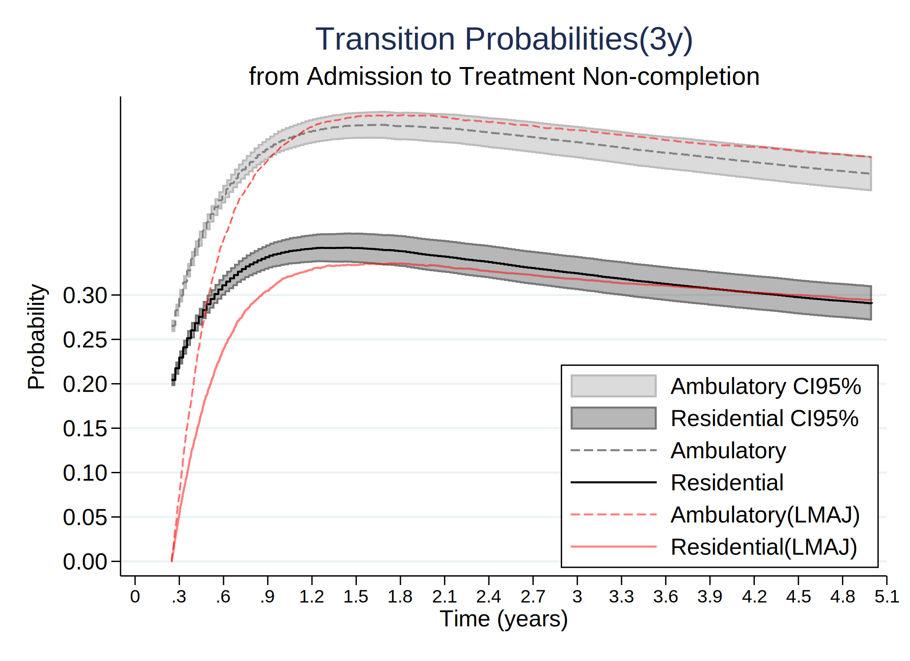
. tw (rarea fprob_from2a_4_lci_3y fprob_from2a_4_uci_3y timevar01, sort connect(stairstep stairstep) lcolor(gs8) color(gs8%35)) ///
> (rarea fprob_from2b_4_lci_3y fprob_from2b_4_uci_3y timevar01, sort connect(stairstep stairstep) lcolor(black) color(black%35)) //
> /
> (line fprob_from2a_4_3y timevar01, sort connect(stairstep stairstep) lcolor(gs8) lpattern("-")) ///
> (line fprob_from2b_4_3y timevar01, sort connect(stairstep stairstep) lcolor(black)) ///
> (line trp_ajprob_30_1826_24 _t_scaled if tipo_de_plan_res_1==0 & _t_scaled<=5, sort connect(stairstep stairstep) lcolor(red%50) l
> pattern("-")) ///
> (line trp_ajprob_30_1826_24 _t_scaled if tipo_de_plan_res_1==1 & _t_scaled<=5, sort connect(stairstep stairstep) lcolor(red%50)),
> ///
> xtitle(Time (years)) ytitle(Probability) xlab(0(.3)5,labsize(small)) ylab(0(0.05).4, ///
> angle(h) format(%4.2f)) legend(order(1 "Ambulatory CI95%" 2 "Residential CI95%" 3 "Ambulatory" 4 "Residential" 5 "Ambulatory(LMAJ)" 6 "R
> esidential(LMAJ)") pos(5) ring(0) c(1)) ///
> title("Transition Probabilities(3y)") name(trans_models_24_3y_22, replace) ///
> subtitle("from Treatment Completion to Readmission") /// *text(0.2 4 "Ambulatory", size(small)) /// * text(0.29 4 "Residential", size(s
> mall)) ///
> graphregion(col(white)) saving(trans_models_24_3y_22_corr3.gph, replace)
(file trans_models_24_3y_22_corr3.gph saved)
. graph save "trans_models_24_3y_22_corr3.gph", replace
(file trans_models_24_3y_22_corr3.gph saved)
. tw (rarea fprob_from3a_5_lci_3y fprob_from3a_5_uci_3y timevar01, sort connect(stairstep stairstep) lcolor(gs8) color(gs8%35)) ///
> (rarea fprob_from3b_5_lci_3y fprob_from3b_5_uci_3y timevar01, sort connect(stairstep stairstep) lcolor(black) color(black%35)) //
> /
> (line fprob_from3a_5_3y timevar01, sort connect(stairstep stairstep) lcolor(gs8) lpattern("-")) ///
> (line fprob_from3b_5_3y timevar01, sort connect(stairstep stairstep) lcolor(black)) ///
> (line trp_ajprob_30_1826_35 _t_scaled if tipo_de_plan_res_1==0 & _t_scaled<=5, sort connect(stairstep stairstep) lcolor(red%50) l
> pattern("-")) ///
> (line trp_ajprob_30_1826_35 _t_scaled if tipo_de_plan_res_1==1 & _t_scaled<=5, sort connect(stairstep stairstep) lcolor(red%50)),
> ///
> xtitle(Time (years)) ytitle(Probability) xlab(0(.3)5,labsize(small)) ylab(0(0.2)1, ///
> angle(h) format(%4.1f)) legend(order(1 "Ambulatory CI95%" 2 "Residential CI95%" 3 "Ambulatory" 4 "Residential" 5 "Ambulatory(LMAJ)" 6 "R
> esidential(LMAJ)") pos(11) ring(0) c(1)) ///
> title("Transition Probabilities(3y)") name(trans_models_35_3y_22, replace) ///
> subtitle("from Treatment Non-Completion to Readmission") /// * text(0.2 4 "Ambulatory", size(small)) /// * text(0.29 4 "Residential", s
> ize(small)) ///
> graphregion(col(white)) saving(trans_models_35_3y_22_corr3.gph, replace)
(file trans_models_35_3y_22_corr3.gph saved)
. graph save "trans_models_35_3y_22_corr3.gph", replace
(file trans_models_35_3y_22_corr3.gph saved)

. tw (rarea fprob_from4a_6_lci_3y fprob_from4a_6_uci_3y timevar01, sort connect(stairstep stairstep) lcolor(gs8) color(gs8%35)) ///
> (rarea fprob_from4b_6_lci_3y fprob_from4b_6_uci_3y timevar01, sort connect(stairstep stairstep) lcolor(black) color(black%35)) //
> /
> (line fprob_from4a_6_3y timevar01, sort connect(stairstep stairstep) lcolor(gs8) lpattern("-")) ///
> (line fprob_from4b_6_3y timevar01, sort connect(stairstep stairstep) lcolor(black)) ///
> (line trp_ajprob_30_1826_46 _t_scaled if tipo_de_plan_res_1==0 & _t_scaled<=5, sort connect(stairstep stairstep) lcolor(red%50) l
> pattern("-")) ///
> (line trp_ajprob_30_1826_46 _t_scaled if tipo_de_plan_res_1==1 & _t_scaled<=5, sort connect(stairstep stairstep) lcolor(red%50)),
> ///
> xtitle(Time (years)) ytitle(Probability) xlab(0(.3)5,labsize(small)) ylab(0(0.2)1, ///
> angle(h) format(%4.1f)) legend(order(1 "Ambulatory CI95%" 2 "Residential CI95%" 3 "Ambulatory" 4 "Residential" 5 "Ambulatory(LMAJ)" 6 "R
> esidential(LMAJ)") pos(11) ring(0) c(1)) ///
> title("Transition Probabilities(3y)") name(trans_models_46_3y_22, replace) ///
> subtitle("from Readmission to Second Readmission (TC)") /// * text(0.2 4 "Ambulatory", size(small)) /// * text(0.29 4 "Residential", si
> ze(small)) ///
> graphregion(col(white)) saving(trans_models_46_3y_22_corr3.gph, replace)
(file trans_models_46_3y_22_corr3.gph saved)
. graph save "trans_models_46_3y_22_corr3.gph", replace
(file trans_models_46_3y_22_corr3.gph saved)

. tw (rarea fprob_from5a_7_lci_3y fprob_from5a_7_uci_3y timevar01, sort connect(stairstep stairstep) lcolor(gs8) color(gs8%35)) ///
> (rarea fprob_from5b_7_lci_3y fprob_from5b_7_uci_3y timevar01, sort connect(stairstep stairstep) lcolor(black) color(black%35)) //
> /
> (line fprob_from5a_7_3y timevar01, sort connect(stairstep stairstep) lcolor(gs8) lpattern("-")) ///
> (line fprob_from5b_7_3y timevar01, sort connect(stairstep stairstep) lcolor(black)) ///
> (line trp_ajprob_30_1826_57 _t_scaled if tipo_de_plan_res_1==0 & _t_scaled<=5, sort connect(stairstep stairstep) lcolor(red%50) l
> pattern("-")) ///
> (line trp_ajprob_30_1826_57 _t_scaled if tipo_de_plan_res_1==1 & _t_scaled<=5, sort connect(stairstep stairstep) lcolor(red%50)),
> ///
> xtitle(Time (years)) ytitle(Probability) xlab(0(.3)5,labsize(small)) ylab(0(0.2)1, ///
> angle(h) format(%4.1f)) legend(order(1 "Ambulatory CI95%" 2 "Residential CI95%" 3 "Ambulatory" 4 "Residential" 5 "Ambulatory(LMAJ)" 6 "R
> esidential(LMAJ)") pos(11) ring(0) c(1)) ///
> title("Transition Probabilities(3y)") name(trans_models_57_3y_22, replace) ///
> subtitle("from Readmission to Second Readmission (TNC)") /// * text(0.2 4 "Ambulatory", size(small)) /// * text(0.29 4 "Residential", s
> ize(small)) ///
> graphregion(col(white)) saving(trans_models_57_3y_22_corr3.gph, replace)
(file trans_models_57_3y_22_corr3.gph saved)
. graph save "trans_models_57_3y_22_corr3.gph", replace
(file trans_models_57_3y_22_corr3.gph saved)

. tw (rarea fprob_from6a_8_lci_3y fprob_from6a_8_uci_3y timevar01, sort connect(stairstep stairstep) lcolor(gs8) color(gs8%35)) ///
> (rarea fprob_from6b_8_lci_3y fprob_from6b_8_uci_3y timevar01, sort connect(stairstep stairstep) lcolor(black) color(black%35)) //
> /
> (line fprob_from6a_8_3y timevar01, sort connect(stairstep stairstep) lcolor(gs8) lpattern("-")) ///
> (line fprob_from6b_8_3y timevar01, sort connect(stairstep stairstep) lcolor(black)) ///
> (line trp_ajprob_30_1826_68 _t_scaled if tipo_de_plan_res_1==0 & _t_scaled<=5, sort connect(stairstep stairstep) lcolor(red%50) l
> pattern("-")) ///
> (line trp_ajprob_30_1826_68 _t_scaled if tipo_de_plan_res_1==1 & _t_scaled<=5, sort connect(stairstep stairstep) lcolor(red%50)),
> ///
> xtitle(Time (years)) ytitle(Probability) xlab(0(.3)5,labsize(small)) ylab(0(0.2)1, ///
> angle(h) format(%4.1f)) legend(order(1 "Ambulatory CI95%" 2 "Residential CI95%" 3 "Ambulatory" 4 "Residential" 5 "Ambulatory(LMAJ)" 6 "R
> esidential(LMAJ)") pos(11) ring(0) c(1)) ///
> title("Transition Probabilities(3y)") name(trans_models_68_3y_22, replace) ///
> subtitle("from Second to Third Readmission (TC)") /// * text(0.2 4 "Ambulatory", size(small)) /// * text(0.29 4 "Residential", size(sma
> ll)) ///
> graphregion(col(white)) saving(trans_models_68_3y_22_corr3.gph, replace)
(file trans_models_68_3y_22_corr3.gph saved)
. graph save "trans_models_68_3y_22_corr3.gph", replace
(file trans_models_68_3y_22_corr3.gph saved)
. tw (rarea fprob_from7a_9_lci_3y fprob_from7a_9_uci_3y timevar01, sort connect(stairstep stairstep) lcolor(gs8) color(gs8%35)) ///
> (rarea fprob_from7b_9_lci_3y fprob_from7b_9_uci_3y timevar01, sort connect(stairstep stairstep) lcolor(black) color(black%35)) //
> /
> (line fprob_from7a_9_3y timevar01, sort connect(stairstep stairstep) lcolor(gs8) lpattern("-")) ///
> (line fprob_from7b_9_3y timevar01, sort connect(stairstep stairstep) lcolor(black)) ///
> (line trp_ajprob_30_1826_79 _t_scaled if tipo_de_plan_res_1==0 & _t_scaled<=5, sort connect(stairstep stairstep) lcolor(red%50) l
> pattern("-")) ///
> (line trp_ajprob_30_1826_79 _t_scaled if tipo_de_plan_res_1==1 & _t_scaled<=5, sort connect(stairstep stairstep) lcolor(red%50)),
> ///
> xtitle(Time (years)) ytitle(Probability) xlab(0(.3)5,labsize(small)) ylab(0(0.2)1, ///
> angle(h) format(%4.1f)) legend(order(1 "Ambulatory CI95%" 2 "Residential CI95%" 3 "Ambulatory" 4 "Residential" 5 "Ambulatory(LMAJ)" 6 "R
> esidential(LMAJ)") pos(11) ring(0) c(1)) ///
> title("Transition Probabilities(3y)") name(trans_models_79_3y_22, replace) ///
> subtitle("from Second to Third Readmission (TNC)") /// * text(0.2 4 "Ambulatory", size(small)) /// * text(0.29 4 "Residential", size(sm
> all)) ///
> graphregion(col(white)) saving(trans_models_79_3y_22_corr3.gph, replace)
(file trans_models_79_3y_22_corr3.gph saved)
. graph save "trans_models_79_3y_22_corr3.gph", replace
(file trans_models_79_3y_22_corr3.gph saved)
=============================================================================
=============================================================================
. tw (rarea flos_from1a_1_lci_3y flos_from1a_1_uci_3y timevar01, sort connect(stairstep stairstep) lcolor(gs8) color(gs8%35)) ///
> (rarea flos_from1b_1_lci_3y flos_from1b_1_uci_3y timevar01, sort connect(stairstep stairstep) lcolor(black) color(black%35)) ///
> (line flos_from1a_1_3y timevar01, sort connect(stairstep stairstep) lcolor(gs8) lpattern("-")) ///
> (line flos_from1b_1_3y timevar01, sort connect(stairstep stairstep) lcolor(black)), ///
> xtitle(Time (years)) ytitle(LOS (years)) xlab(0(.3)5,labsize(small)) ylab(0(90)365, /// *730
> angle(h) format(%4.0f)) legend(order(1 "Ambulatory CI95%" 2 "Residential CI95%" 3 "Ambulatory" 4 "Residential") pos(11) ring(0) c(1)) //
> /
> title("Length of Stay(3y)") name(los_models_11_3y_22_corr3, replace) ///
> subtitle("in Admission") /// * text(0.2 4 "Ambulatory", size(small)) /// * text(0.29 4 "Residential", size(small)) ///
> graphregion(col(white)) saving(los_models_11_3y_22_corr3.gph, replace)
(file los_models_11_3y_22_corr3.gph saved)
. graph save "los_models_11_3y_22_corr3.gph", replace
(file los_models_11_3y_22_corr3.gph saved)
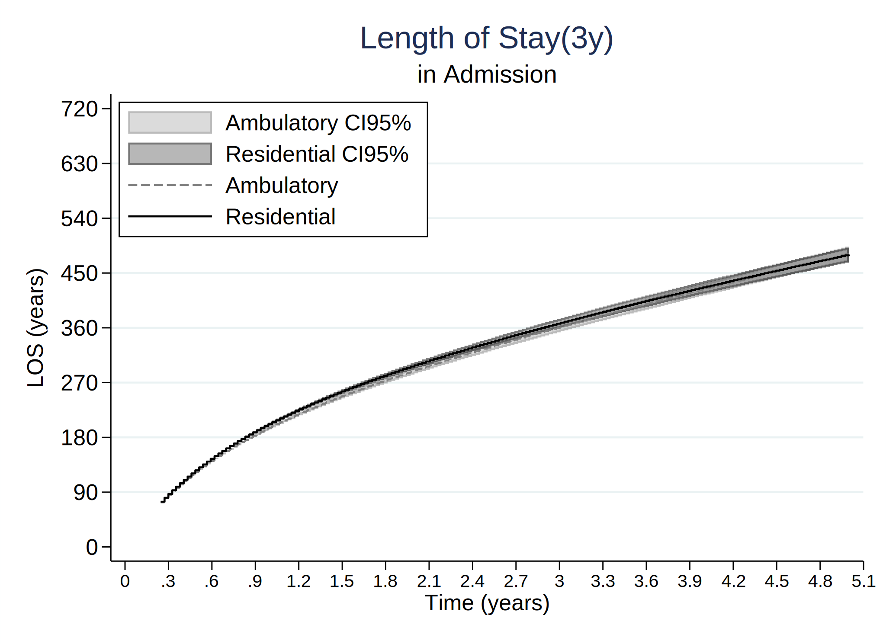
. tw (rarea flos_from2a_2_lci_3y flos_from2a_2_uci_3y timevar01, sort connect(stairstep stairstep) lcolor(gs8) color(gs8%35)) ///
> (rarea flos_from2b_2_lci_3y flos_from2b_2_uci_3y timevar01, sort connect(stairstep stairstep) lcolor(black) color(black%35)) ///
> (line flos_from2a_2_3y timevar01, sort connect(stairstep stairstep) lcolor(gs8) lpattern("-")) ///
> (line flos_from2b_2_3y timevar01, sort connect(stairstep stairstep) lcolor(black)), ///
> xtitle(Time (years)) ytitle(LOS (years)) xlab(0(.3)5,labsize(small)) ylab(0(90)400, /// *730
> angle(h) format(%4.0f)) legend(order(1 "Ambulatory CI95%" 2 "Residential CI95%" 3 "Ambulatory" 4 "Residential") pos(11) ring(0) c(1)) //
> /
> title("Length of Stay(3y)") name(los_models_22_3y_22, replace) ///
> subtitle("in Treatment Completion") /// * text(0.2 4 "Ambulatory", size(small)) /// * text(0.29 4 "Residential", size(small)) ///
> graphregion(col(white)) saving(los_models_22_3y_22_corr3.gph, replace)
(file los_models_22_3y_22_corr3.gph saved)
. graph save "los_models_22_3y_22_corr3.gph", replace
(file los_models_22_3y_22_corr3.gph saved)
. tw (rarea flos_from3a_3_lci_3y flos_from3a_3_uci_3y timevar01, sort connect(stairstep stairstep) lcolor(gs8) color(gs8%35)) ///
> (rarea flos_from3b_3_lci_3y flos_from3b_3_uci_3y timevar01, sort connect(stairstep stairstep) lcolor(black) color(black%35)) ///
> (line flos_from3a_3_3y timevar01, sort connect(stairstep stairstep) lcolor(gs8) lpattern("-")) ///
> (line flos_from3b_3_3y timevar01, sort connect(stairstep stairstep) lcolor(black)), ///
> xtitle(Time (years)) ytitle(LOS (years)) xlab(0(.3)5,labsize(small)) ylab(0(90)540, /// *730
> angle(h) format(%4.0f)) legend(order(1 "Ambulatory CI95%" 2 "Residential CI95%" 3 "Ambulatory" 4 "Residential") pos(11) ring(0) c(1)) //
> /
> title("Length of Stay(3y)") name(los_models_33_3y_22, replace) ///
> subtitle("in Treatment Non-Completion") /// * text(0.2 4 "Ambulatory", size(small)) /// * text(0.29 4 "Residential", size(small)) ///
> graphregion(col(white)) saving(los_models_33_3y_22_corr3.gph, replace)
(file los_models_33_3y_22_corr3.gph saved)
. graph save "los_models_33_3y_22_corr3.gph", replace
(file los_models_33_3y_22_corr3.gph saved)
. tw (rarea flos_from4a_4_lci_3y flos_from4a_4_uci_3y timevar01, sort connect(stairstep stairstep) lcolor(gs8) color(gs8%35)) ///
> (rarea flos_from4b_4_lci_3y flos_from4b_4_uci_3y timevar01, sort connect(stairstep stairstep) lcolor(black) color(black%35)) ///
> (line flos_from4a_4_3y timevar01, sort connect(stairstep stairstep) lcolor(gs8) lpattern("-")) ///
> (line flos_from4b_4_3y timevar01, sort connect(stairstep stairstep) lcolor(black)), ///
> xtitle(Time (years)) ytitle(LOS (years)) xlab(0(.3)5,labsize(small)) ylab(0(90)1080, /// *730
> angle(h) format(%4.0f)) legend(order(1 "Ambulatory CI95%" 2 "Residential CI95%" 3 "Ambulatory" 4 "Residential") pos(11) ring(0) c(1)) //
> /
> title("Length of Stay(3y)") name(los_models_44_3y_22, replace) ///
> subtitle("in Readmission (TC)") /// * text(0.2 4 "Ambulatory", size(small)) /// * text(0.29 4 "Residential", size(small)) ///
> graphregion(col(white)) saving(los_models_44_3y_22_corr3.gph, replace)
(file los_models_44_3y_22_corr3.gph saved)
. graph save "los_models_44_3y_22_corr3.gph", replace
(file los_models_44_3y_22_corr3.gph saved)
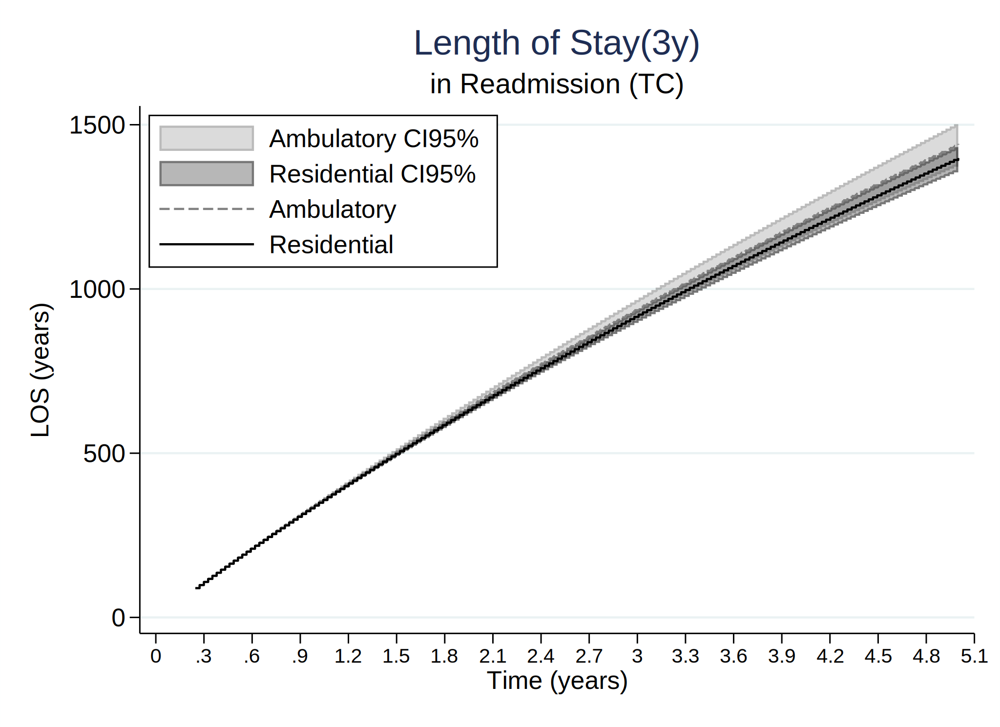
. tw (rarea flos_from5a_5_lci_3y flos_from5a_5_uci_3y timevar01, sort connect(stairstep stairstep) lcolor(gs8) color(gs8%35)) ///
> (rarea flos_from5b_5_lci_3y flos_from5b_5_uci_3y timevar01, sort connect(stairstep stairstep) lcolor(black) color(black%35)) ///
> (line flos_from5a_5_3y timevar01, sort connect(stairstep stairstep) lcolor(gs8) lpattern("-")) ///
> (line flos_from5b_5_3y timevar01, sort connect(stairstep stairstep) lcolor(black)), ///
> xtitle(Time (years)) ytitle(LOS (years)) xlab(0(.3)5,labsize(small)) ylab(0(90)400, /// *730
> angle(h) format(%4.0f)) legend(order(1 "Ambulatory CI95%" 2 "Residential CI95%" 3 "Ambulatory" 4 "Residential") pos(11) ring(0) c(1)) //
> /
> title("Length of Stay(3y)") name(los_models_22_3y_22, replace) ///
> subtitle("in Readmission (TNC)") /// * text(0.2 4 "Ambulatory", size(small)) /// * text(0.29 4 "Residential", size(small)) ///
> graphregion(col(white)) saving(los_models_55_3y_22_corr3.gph, replace)
(file los_models_55_3y_22_corr3.gph saved)
. graph save "los_models_55_3y_22_corr3.gph", replace
(file los_models_55_3y_22_corr3.gph saved)
. tw (rarea flos_from6a_6_lci_3y flos_from6a_6_uci_3y timevar01, sort connect(stairstep stairstep) lcolor(gs8) color(gs8%35)) ///
> (rarea flos_from6b_6_lci_3y flos_from6b_6_uci_3y timevar01, sort connect(stairstep stairstep) lcolor(black) color(black%35)) ///
> (line flos_from6a_6_3y timevar01, sort connect(stairstep stairstep) lcolor(gs8) lpattern("-")) ///
> (line flos_from6b_6_3y timevar01, sort connect(stairstep stairstep) lcolor(black)), ///
> xtitle(Time (years)) ytitle(LOS (years)) xlab(0(.3)5,labsize(small)) ylab(0(90)540, /// *730
> angle(h) format(%4.0f)) legend(order(1 "Ambulatory CI95%" 2 "Residential CI95%" 3 "Ambulatory" 4 "Residential") pos(11) ring(0) c(1)) //
> /
> title("Length of Stay(3y)") name(los_models_66_3y_22, replace) ///
> subtitle("in Second Readmission (TC)") /// * text(0.2 4 "Ambulatory", size(small)) /// * text(0.29 4 "Residential", size(small)) ///
> graphregion(col(white)) saving(los_models_66_3y_22_corr3.gph, replace)
(file los_models_66_3y_22_corr3.gph saved)
. graph save "los_models_66_3y_22_corr3.gph", replace
(file los_models_66_3y_22_corr3.gph saved)
. tw (rarea flos_from7a_7_lci_3y flos_from7a_7_uci_3y timevar01, sort connect(stairstep stairstep) lcolor(gs8) color(gs8%35)) ///
> (rarea flos_from7b_7_lci_3y flos_from7b_7_uci_3y timevar01, sort connect(stairstep stairstep) lcolor(black) color(black%35)) ///
> (line flos_from7a_7_3y timevar01, sort connect(stairstep stairstep) lcolor(gs8) lpattern("-")) ///
> (line flos_from7b_7_3y timevar01, sort connect(stairstep stairstep) lcolor(black)), ///
> xtitle(Time (years)) ytitle(LOS (years)) xlab(0(.3)5,labsize(small)) ylab(0(90)1080, /// *730
> angle(h) format(%4.0f)) legend(order(1 "Ambulatory CI95%" 2 "Residential CI95%" 3 "Ambulatory" 4 "Residential") pos(11) ring(0) c(1)) //
> /
> title("Length of Stay(3y)") name(los_models_77_3y_22, replace) ///
> subtitle("in Second Readmission (TNC)") /// * text(0.2 4 "Ambulatory", size(small)) /// * text(0.29 4 "Residential", size(small)) ///
> graphregion(col(white)) saving(los_models_77_3y_22_corr3.gph, replace)
(file los_models_77_3y_22_corr3.gph saved)
. graph save "los_models_77_3y_22_corr3.gph", replace
(file los_models_77_3y_22_corr3.gph saved)
=============================================================================
=============================================================================
.
. tw (rarea fdiff_prob_from1_2_lci_3y fdiff_prob_from1_2_uci_3y timevar01, sort connect(stairstep stairstep) lcolor(gs8) color(gs8%75)
> ) ///
> (line fdiff_prob_from1_2_3y timevar01, sort connect(stairstep stairstep) lcolor(black)) ///
> (rarea fdiff_prob_from1_3_lci_3y fdiff_prob_from1_3_uci_3y timevar01, sort connect(stairstep stairstep) lcolor(gs8) color(gs8%35)
> ) ///
> (line fdiff_prob_from1_3_3y timevar01, sort connect(stairstep stairstep) lcolor(gs8)), ///
> yline(0, lcolor(navy)) ///
> xtitle(Time (years)) ytitle(Difference in Probabilities) xlab(0(.3)5,labsize(small)) ylab(-.25(.05).25, /// *730
> angle(h) format(%4.2f)) legend(order(1 "CI95%" 2 "Difference (TC)" 3 "CI95%" 4 "Difference (TNC)") pos(11) ring(0) c(1)) ///
> title("Difference in Probabilities at 3 years") name(diff_mod1213_3y_22, replace) ///
> subtitle("from Admission to Readmission") ///
> graphregion(col(white)) saving(diff_mod1213_3y_22_corr3.gph, replace)
(file diff_mod1213_3y_22_corr3.gph saved)
. graph save "diff_mod1213_3y_22_corr3.gph", replace
(file diff_mod1213_3y_22_corr3.gph saved)
. tw (rarea fdiff_prob_from2_4_lci_3y fdiff_prob_from2_4_uci_3y timevar01, sort connect(stairstep stairstep) lcolor(gs8) color(gs8%75)
> ) ///
> (line fdiff_prob_from2_4_3y timevar01, sort connect(stairstep stairstep) lcolor(black)) ///
> (rarea fdiff_prob_from3_5_lci_3y fdiff_prob_from3_5_uci_3y timevar01, sort connect(stairstep stairstep) lcolor(gs8) color(gs8%35)
> ) ///
> (line fdiff_prob_from3_5_3y timevar01, sort connect(stairstep stairstep) lcolor(gs8)), ///
> yline(0, lcolor(navy)) ///
> xtitle(Time (years)) ytitle(Difference in Probabilities) xlab(0(.3)5,labsize(small)) ylab(-.25(.05).25, /// *730
> angle(h) format(%4.2f)) legend(order(1 "CI95%" 2 "Difference (TC)" 3 "CI95%" 4 "Difference (TNC)") pos(4) ring(0) c(1)) ///
> title("Difference in Probabilities at 3 years") name(diff_mod2435_3y_22, replace) ///
> subtitle("from First treatment to Readmission") ///
> graphregion(col(white)) saving(diff_mod2435_3y_22_corr3.gph, replace)
(file diff_mod2435_3y_22_corr3.gph saved)
. graph save "diff_mod2435_3y_22_corr3.gph", replace
(file diff_mod2435_3y_22_corr3.gph saved)
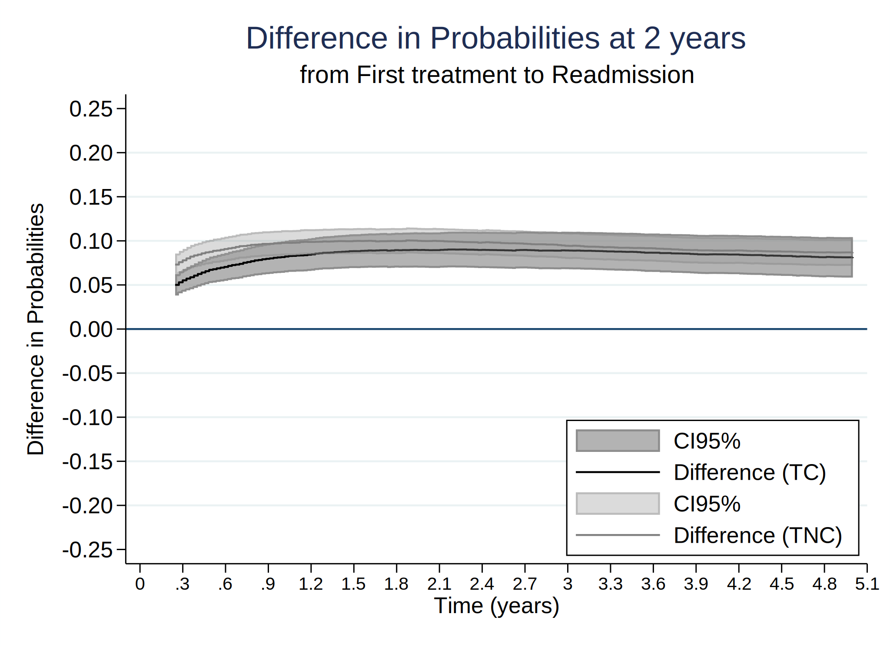
. tw (rarea fdiff_prob_from4_6_lci_3y fdiff_prob_from4_6_uci_3y timevar01, sort connect(stairstep stairstep) lcolor(gs8) color(gs8%75)
> ) ///
> (line fdiff_prob_from4_6_3y timevar01, sort connect(stairstep stairstep) lcolor(black)) ///
> (rarea fdiff_prob_from5_7_lci_3y fdiff_prob_from5_7_uci_3y timevar01, sort connect(stairstep stairstep) lcolor(gs8) color(gs8%35)
> ) ///
> (line fdiff_prob_from5_7_3y timevar01, sort connect(stairstep stairstep) lcolor(gs8)), ///
> yline(0, lcolor(navy)) ///
> xtitle(Time (years)) ytitle(Difference in Probabilities) xlab(0(.3)5,labsize(small)) ylab(-.25(.05).25, /// *730
> angle(h) format(%4.2f)) legend(order(1 "CI95%" 2 "Difference (TC)" 3 "CI95%" 4 "Difference (TNC)") pos(4) ring(0) c(1)) ///
> title("Difference in Probabilities at 3 years") name(diff_mod2435_3y_22, replace) ///
> subtitle("from First to Second Readmission") ///
> graphregion(col(white)) saving(diff_mod4657_3y_22_corr3.gph, replace)
(file diff_mod4657_3y_22_corr3.gph saved)
. graph save "diff_mod4657_3y_22_corr3.gph", replace
(file diff_mod4657_3y_22_corr3.gph saved)

. tw (rarea fdiff_prob_from6_8_lci_3y fdiff_prob_from6_8_uci_3y timevar01, sort connect(stairstep stairstep) lcolor(gs8) color(gs8%75)
> ) ///
> (line fdiff_prob_from6_8_3y timevar01, sort connect(stairstep stairstep) lcolor(black)) ///
> (rarea fdiff_prob_from7_9_lci_3y fdiff_prob_from7_9_uci_3y timevar01, sort connect(stairstep stairstep) lcolor(gs8) color(gs8%35)
> ) ///
> (line fdiff_prob_from7_9_3y timevar01, sort connect(stairstep stairstep) lcolor(gs8)), ///
> yline(0, lcolor(navy)) ///
> xtitle(Time (years)) ytitle(Difference in Probabilities) xlab(0(.3)5,labsize(small)) ylab(-.25(.05).25, /// *730
> angle(h) format(%4.2f)) legend(order(1 "CI95%" 2 "Difference (TC)" 3 "CI95%" 4 "Difference (TNC)") pos(4) ring(0) c(1)) ///
> title("Difference in Probabilities at 3 years") name(diff_mod2435_3y_22, replace) ///
> subtitle("from Second to Third Readmission") ///
> graphregion(col(white)) saving(diff_mod6879_3y_22_corr3.gph, replace)
(file diff_mod6879_3y_22_corr3.gph saved)
. graph save "diff_mod6879_3y_22_corr3.gph", replace
(file diff_mod6879_3y_22_corr3.gph saved)
=============================================================================
=============================================================================
.
. tw (rarea fdiff_los_from1_2_lci_3y fdiff_los_from1_2_uci_3y timevar01, sort connect(stairstep stairstep) lcolor(gs8) color(gs8%75))
> ///
> (line fdiff_los_from1_2_3y timevar01, sort connect(stairstep stairstep) lcolor(black)) ///
> (rarea fdiff_los_from1_3_lci_3y fdiff_los_from1_3_uci_3y timevar01, sort connect(stairstep stairstep) lcolor(gs8) color(gs8%35))
> ///
> (line fdiff_los_from1_3_3y timevar01, sort connect(stairstep stairstep) lcolor(gs8)), ///
> yline(0, lcolor(navy)) ///
> xtitle(Time (years)) ytitle(Difference in Lengths of Stay) xlab(0(.3)5,labsize(small)) ylab(-365(90)365, /// *730
> angle(h) format(%4.0f)) legend(order(1 "CI95%" 2 "Difference (TC)" 3 "CI95%" 4 "Difference (TNC)") pos(11) ring(0) c(1)) ///
> title("Difference in Probabilities at 3 years") name(diff_mod_los1213_3y_22, replace) ///
> subtitle("from Admission to Readmission") ///
> graphregion(col(white)) saving(diff_mod_los1213_3y_22_corr3.gph, replace)
(file diff_mod_los1213_3y_22_corr3.gph saved)
. graph save "diff_mod_los1213_3y_22_corr3.gph", replace
(file diff_mod_los1213_3y_22_corr3.gph saved)
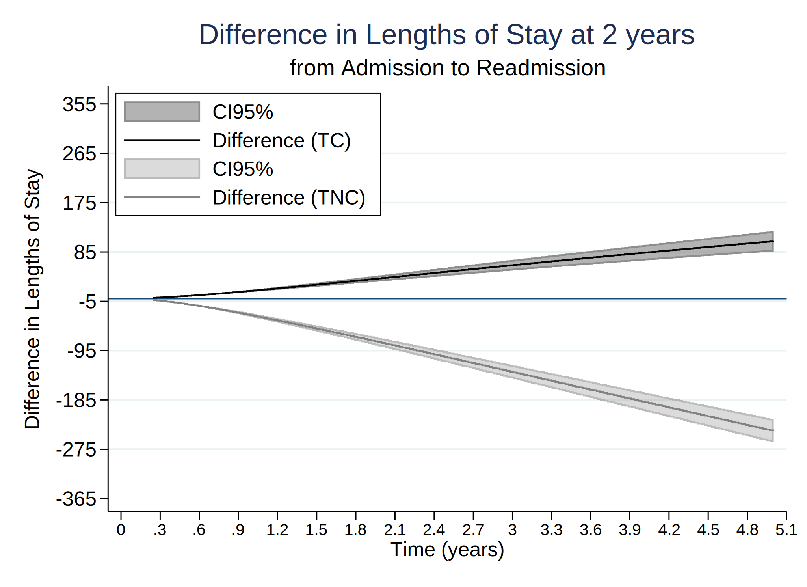
. tw (rarea fdiff_los_from2_4_lci_3y fdiff_los_from2_4_uci_3y timevar01, sort connect(stairstep stairstep) lcolor(gs8) color(gs8%75))
> ///
> (line fdiff_los_from2_4_3y timevar01, sort connect(stairstep stairstep) lcolor(black)) ///
> (rarea fdiff_los_from3_5_lci_3y fdiff_los_from3_5_uci_3y timevar01, sort connect(stairstep stairstep) lcolor(gs8) color(gs8%35))
> ///
> (line fdiff_los_from3_5_3y timevar01, sort connect(stairstep stairstep) lcolor(gs8)), ///
> yline(0, lcolor(navy)) ///
> xtitle(Time (years)) ytitle(Difference in Lengths of Stay) xlab(0(.3)5,labsize(small)) ylab(-365(90)365, /// *730
> angle(h) format(%4.0f)) legend(order(1 "CI95%" 2 "Difference (TC)" 3 "CI95%" 4 "Difference (TNC)") pos(4) ring(0) c(1)) ///
> title("Difference in Probabilities at 3 years") name(diff_mod_los2435_3y_22, replace) ///
> subtitle("from First treatment to Readmission") ///
> graphregion(col(white)) saving(diff_mod_los2435_3y_22_corr3.gph, replace)
(file diff_mod_los2435_3y_22_corr3.gph saved)
. graph save "diff_mod_los2435_3y_22_corr3.gph", replace
(file diff_mod_los2435_3y_22_corr3.gph saved)
. tw (rarea fdiff_los_from4_6_lci_3y fdiff_los_from4_6_uci_3y timevar01, sort connect(stairstep stairstep) lcolor(gs8) color(gs8%75))
> ///
> (line fdiff_los_from4_6_3y timevar01, sort connect(stairstep stairstep) lcolor(black)) ///
> (rarea fdiff_los_from5_7_lci_3y fdiff_los_from5_7_uci_3y timevar01, sort connect(stairstep stairstep) lcolor(gs8) color(gs8%35))
> ///
> (line fdiff_los_from5_7_3y timevar01, sort connect(stairstep stairstep) lcolor(gs8)), ///
> yline(0, lcolor(navy)) ///
> xtitle(Time (years)) ytitle(Difference in Lengths of Stay) xlab(0(.3)5,labsize(small)) ylab(-365(90)365, /// *730
> angle(h) format(%4.0f)) legend(order(1 "CI95%" 2 "Difference (TC)" 3 "CI95%" 4 "Difference (TNC)") pos(4) ring(0) c(1)) ///
> title("Difference in Probabilities at 3 years") name(diff_mod_los2435_3y_22, replace) ///
> subtitle("from First to Second Readmission") ///
> graphregion(col(white)) saving(diff_mod_los4657_3y_22_corr3.gph, replace)
(file diff_mod_los4657_3y_22_corr3.gph saved)
. graph save "diff_mod_los4657_3y_22_corr3.gph", replace
(file diff_mod_los4657_3y_22_corr3.gph saved)
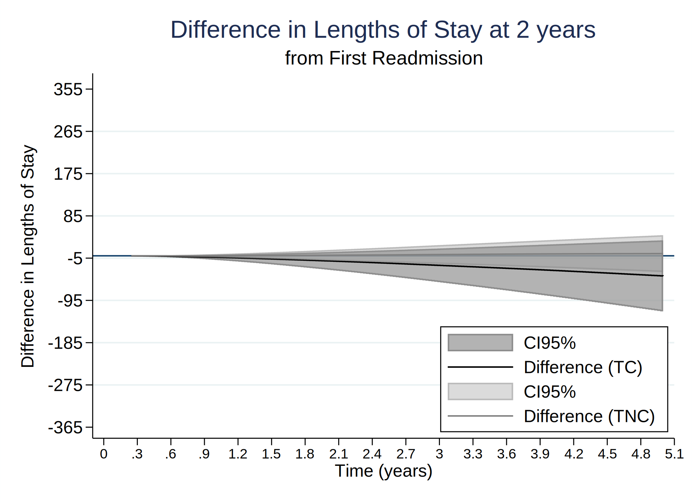
. tw (rarea fdiff_los_from6_8_lci_3y fdiff_los_from6_8_uci_3y timevar01, sort connect(stairstep stairstep) lcolor(gs8) color(gs8%75))
> ///
> (line fdiff_los_from6_8_3y timevar01, sort connect(stairstep stairstep) lcolor(black)) ///
> (rarea fdiff_los_from7_9_lci_3y fdiff_los_from7_9_uci_3y timevar01, sort connect(stairstep stairstep) lcolor(gs8) color(gs8%35))
> ///
> (line fdiff_los_from7_9_3y timevar01, sort connect(stairstep stairstep) lcolor(gs8)), ///
> yline(0, lcolor(navy)) ///
> xtitle(Time (years)) ytitle(Difference in Lengths of Stay) xlab(0(.3)5,labsize(small)) ylab(-365(90)365, /// *730
> angle(h) format(%4.0f)) legend(order(1 "CI95%" 2 "Difference (TC)" 3 "CI95%" 4 "Difference (TNC)") pos(4) ring(0) c(1)) ///
> title("Difference in Probabilities at 3 years") name(diff_mod_los2435_3y_22, replace) ///
> subtitle("from Second to Third Readmission") ///
> graphregion(col(white)) saving(diff_mod_los6879_3y_22_corr3.gph, replace)
(file diff_mod_los6879_3y_22_corr3.gph saved)
. graph save "diff_mod_los6879_3y_22_corr3.gph", replace
(file diff_mod_los6879_3y_22_corr3.gph saved)
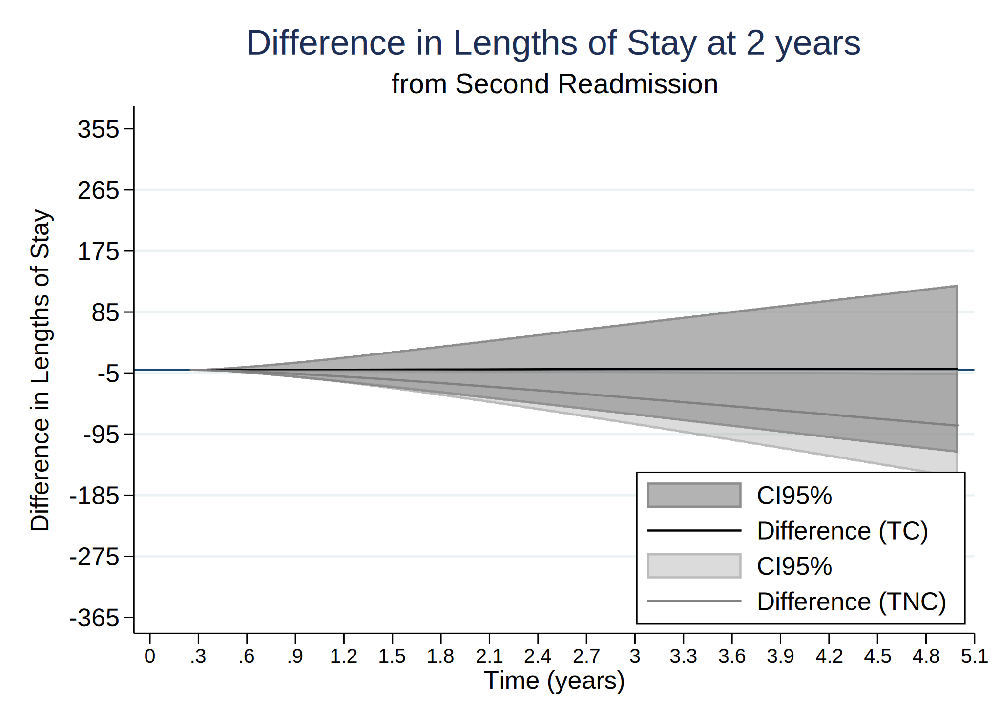
=============================================================================
=============================================================================
. *Assessing and relaxing the Markov assumption in the illness-death model
. *Jonathan Broomfield1, Caroline E. Weibull2, and Michael J. Crowther
. tw (rarea fprob_from1a_2_lci_3y_rp fprob_from1a_2_uci_3y_rp timevar01, sort connect(stairstep stairstep) lcolor(gs8) color(gs8%35))
> ///
> (rarea fprob_from1b_2_lci_3y_rp fprob_from1b_2_uci_3y_rp timevar01, sort connect(stairstep stairstep) lcolor(black) color(black%3
> 5)) ///
> (line fprob_from1a_2_3y_rp timevar01, sort connect(stairstep stairstep) lcolor(gs8) lpattern("-")) ///
> (line fprob_from1b_2_3y_rp timevar01, sort connect(stairstep stairstep) lcolor(black)) ///
> (line trp_ajprob_30_1826_12 _t_scaled if tipo_de_plan_res_1==0 & _t_scaled<=5, sort connect(stairstep stairstep) lcolor(red%50) l
> pattern("-")) ///
> (line trp_ajprob_30_1826_12 _t_scaled if tipo_de_plan_res_1==1 & _t_scaled<=5, sort connect(stairstep stairstep) lcolor(red%50)),
> ///
> xtitle(Time (years)) ytitle(Probability) xlab(0(.3)5,labsize(small)) ylab(0(0.05).4, ///
> angle(h) format(%4.2f)) legend(order(1 "Ambulatory CI95%" 2 "Residential CI95%" 3 "Ambulatory" 4 "Residential" 5 "Ambulatory(LMAJ)" 6 "R
> esidential(LMAJ)") pos(11) ring(0) c(1)) ///
> title("Transition Probabilities(3y)") name(trans_models_12_3y_rp_22, replace) ///
> subtitle("from Admission to Treatment Completion (RP)") /// *text(0.2 4 "Ambulatory", size(small)) /// *text(0.29 4 "Residential", size
> (small)) ///
> graphregion(col(white)) saving(trans_models_12_3y_rp_22_corr3.gph, replace)
(file trans_models_12_3y_rp_22_corr3.gph saved)
. graph save "trans_models_12_3y_rp_22_corr3.gph", replace
(file trans_models_12_3y_rp_22_corr3.gph saved)

. tw (rarea fprob_from1a_3_lci_3y_rp fprob_from1a_3_uci_3y_rp timevar01, sort connect(stairstep stairstep) lcolor(gs8) color(gs8%35))
> ///
> (rarea fprob_from1b_3_lci_3y_rp fprob_from1b_3_uci_3y_rp timevar01, sort connect(stairstep stairstep) lcolor(black) color(black%3
> 5)) ///
> (line fprob_from1a_3_3y_rp timevar01, sort connect(stairstep stairstep) lcolor(gs8) lpattern("-")) ///
> (line fprob_from1b_3_3y_rp timevar01, sort connect(stairstep stairstep) lcolor(black)) ///
> (line trp_ajprob_30_1826_13 _t_scaled if tipo_de_plan_res_1==0 & _t_scaled<=5, sort connect(stairstep stairstep) lcolor(red%50) l
> pattern("-")) ///
> (line trp_ajprob_30_1826_13 _t_scaled if tipo_de_plan_res_1==1 & _t_scaled<=5, sort connect(stairstep stairstep) lcolor(red%50)),
> ///
> xtitle(Time (years)) ytitle(Probability) xlab(0(.3)5,labsize(small)) ylab(0(0.05).3, ///
> angle(h) format(%4.2f)) legend(order(1 "Ambulatory CI95%" 2 "Residential CI95%" 3 "Ambulatory" 4 "Residential" 5 "Ambulatory(LMAJ)" 6 "R
> esidential(LMAJ)") pos(5) ring(0) c(1)) ///
> title("Transition Probabilities(3y)") name(trans_models_13_3y_rp_22, replace) ///
> subtitle("from Admission to Treatment Non-completion (RP)") /// *text(0.2 4 "Ambulatory", size(small)) /// * text(0.29 4 "Residential",
> size(small)) ///
> graphregion(col(white)) saving(trans_models_13_3y_rp_22_corr3.gph, replace)
(file trans_models_13_3y_rp_22_corr3.gph saved)
. graph save "trans_models_13_3y_rp_22_corr3.gph", replace
(file trans_models_13_3y_rp_22_corr3.gph saved)
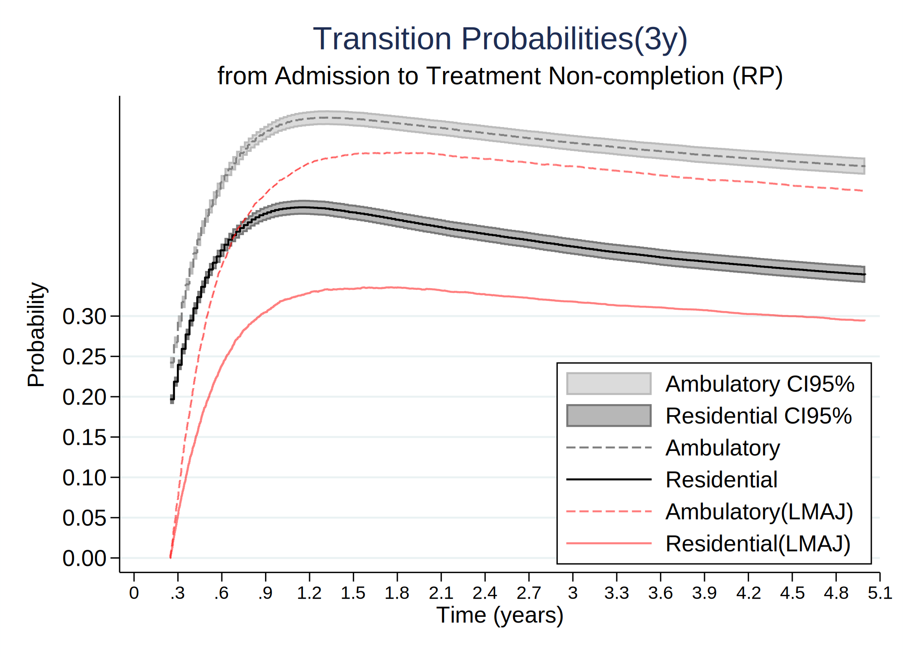
. tw (rarea fprob_from2a_4_lci_3y_rp fprob_from2a_4_uci_3y_rp timevar01, sort connect(stairstep stairstep) lcolor(gs8) color(gs8%35))
> ///
> (rarea fprob_from2b_4_lci_3y_rp fprob_from2b_4_uci_3y_rp timevar01, sort connect(stairstep stairstep) lcolor(black) color(black%3
> 5)) ///
> (line fprob_from2a_4_3y_rp timevar01, sort connect(stairstep stairstep) lcolor(gs8) lpattern("-")) ///
> (line fprob_from2b_4_3y_rp timevar01, sort connect(stairstep stairstep) lcolor(black)) ///
> (line trp_ajprob_30_1826_24 _t_scaled if tipo_de_plan_res_1==0 & _t_scaled<=5, sort connect(stairstep stairstep) lcolor(red%50) l
> pattern("-")) ///
> (line trp_ajprob_30_1826_24 _t_scaled if tipo_de_plan_res_1==1 & _t_scaled<=5, sort connect(stairstep stairstep) lcolor(red%50)),
> ///
> xtitle(Time (years)) ytitle(Probability) xlab(0(.3)5,labsize(small)) ylab(0(0.05).4, ///
> angle(h) format(%4.2f)) legend(order(1 "Ambulatory CI95%" 2 "Residential CI95%" 3 "Ambulatory" 4 "Residential" 5 "Ambulatory(LMAJ)" 6 "R
> esidential(LMAJ)") pos(5) ring(0) c(1)) ///
> title("Transition Probabilities(3y)") name(trans_models_24_3y_rp_22, replace) ///
> subtitle("from Treatment Completion to Readmission (RP)") /// *text(0.2 4 "Ambulatory", size(small)) /// * text(0.29 4 "Residential", s
> ize(small)) ///
> graphregion(col(white)) saving(trans_models_24_3y_rp_22_corr3.gph, replace)
(file trans_models_24_3y_rp_22_corr3.gph saved)
. graph save "trans_models_24_3y_rp_22_corr3.gph", replace
(file trans_models_24_3y_rp_22_corr3.gph saved)
. tw (rarea fprob_from3a_5_lci_3y_rp fprob_from3a_5_uci_3y_rp timevar01, sort connect(stairstep stairstep) lcolor(gs8) color(gs8%35))
> ///
> (rarea fprob_from3b_5_lci_3y_rp fprob_from3b_5_uci_3y_rp timevar01, sort connect(stairstep stairstep) lcolor(black) color(black%3
> 5)) ///
> (line fprob_from3a_5_3y_rp timevar01, sort connect(stairstep stairstep) lcolor(gs8) lpattern("-")) ///
> (line fprob_from3b_5_3y_rp timevar01, sort connect(stairstep stairstep) lcolor(black)) ///
> (line trp_ajprob_30_1826_35 _t_scaled if tipo_de_plan_res_1==0 & _t_scaled<=5, sort connect(stairstep stairstep) lcolor(red%50) l
> pattern("-")) ///
> (line trp_ajprob_30_1826_35 _t_scaled if tipo_de_plan_res_1==1 & _t_scaled<=5, sort connect(stairstep stairstep) lcolor(red%50)),
> ///
> xtitle(Time (years)) ytitle(Probability) xlab(0(.3)5,labsize(small)) ylab(0(0.2)1, ///
> angle(h) format(%4.1f)) legend(order(1 "Ambulatory CI95%" 2 "Residential CI95%" 3 "Ambulatory" 4 "Residential" 5 "Ambulatory(LMAJ)" 6 "R
> esidential(LMAJ)") pos(11) ring(0) c(1)) ///
> title("Transition Probabilities(3y)") name(trans_models_35_3y_rp_22, replace) ///
> subtitle("from Treatment Non-Completion to Readmission (RP)") /// * text(0.2 4 "Ambulatory", size(small)) /// * text(0.29 4 "Residentia
> l", size(small)) ///
> graphregion(col(white)) saving(trans_models_35_3y_rp_22_corr3.gph, replace)
(file trans_models_35_3y_rp_22_corr3.gph saved)
. graph save "trans_models_35_3y_rp_22_corr3.gph", replace
(file trans_models_35_3y_rp_22_corr3.gph saved)

. tw (rarea fprob_from4a_6_lci_3y_rp fprob_from4a_6_uci_3y_rp timevar01, sort connect(stairstep stairstep) lcolor(gs8) color(gs8%35))
> ///
> (rarea fprob_from4b_6_lci_3y_rp fprob_from4b_6_uci_3y_rp timevar01, sort connect(stairstep stairstep) lcolor(black) color(black%3
> 5)) ///
> (line fprob_from4a_6_3y_rp timevar01, sort connect(stairstep stairstep) lcolor(gs8) lpattern("-")) ///
> (line fprob_from4b_6_3y_rp timevar01, sort connect(stairstep stairstep) lcolor(black)) ///
> (line trp_ajprob_30_1826_46 _t_scaled if tipo_de_plan_res_1==0 & _t_scaled<=5, sort connect(stairstep stairstep) lcolor(red%50) l
> pattern("-")) ///
> (line trp_ajprob_30_1826_46 _t_scaled if tipo_de_plan_res_1==1 & _t_scaled<=5, sort connect(stairstep stairstep) lcolor(red%50)),
> ///
> xtitle(Time (years)) ytitle(Probability) xlab(0(.3)5,labsize(small)) ylab(0(0.2)1, ///
> angle(h) format(%4.1f)) legend(order(1 "Ambulatory CI95%" 2 "Residential CI95%" 3 "Ambulatory" 4 "Residential" 5 "Ambulatory(LMAJ)" 6 "R
> esidential(LMAJ)") pos(11) ring(0) c(1)) ///
> title("Transition Probabilities(3y)") name(trans_models_46_3y_rp_22, replace) ///
> subtitle("from Readmission to Second Readmission (TC) (RP)") /// * text(0.2 4 "Ambulatory", size(small)) /// * text(0.29 4 "Residential
> ", size(small)) ///
> graphregion(col(white)) saving(trans_models_46_3y_rp_22_corr3.gph, replace)
(file trans_models_46_3y_rp_22_corr3.gph saved)
. graph save "trans_models_46_3y_rp_22_corr3.gph", replace
(file trans_models_46_3y_rp_22_corr3.gph saved)

. tw (rarea fprob_from5a_7_lci_3y_rp fprob_from5a_7_uci_3y_rp timevar01, sort connect(stairstep stairstep) lcolor(gs8) color(gs8%35))
> ///
> (rarea fprob_from5b_7_lci_3y_rp fprob_from5b_7_uci_3y_rp timevar01, sort connect(stairstep stairstep) lcolor(black) color(black%3
> 5)) ///
> (line fprob_from5a_7_3y_rp timevar01, sort connect(stairstep stairstep) lcolor(gs8) lpattern("-")) ///
> (line fprob_from5b_7_3y_rp timevar01, sort connect(stairstep stairstep) lcolor(black)) ///
> (line trp_ajprob_30_1826_57 _t_scaled if tipo_de_plan_res_1==0 & _t_scaled<=5, sort connect(stairstep stairstep) lcolor(red%50) l
> pattern("-")) ///
> (line trp_ajprob_30_1826_57 _t_scaled if tipo_de_plan_res_1==1 & _t_scaled<=5, sort connect(stairstep stairstep) lcolor(red%50)),
> ///
> xtitle(Time (years)) ytitle(Probability) xlab(0(.3)5,labsize(small)) ylab(0(0.2)1, ///
> angle(h) format(%4.1f)) legend(order(1 "Ambulatory CI95%" 2 "Residential CI95%" 3 "Ambulatory" 4 "Residential" 5 "Ambulatory(LMAJ)" 6 "R
> esidential(LMAJ)") pos(11) ring(0) c(1)) ///
> title("Transition Probabilities(3y)") name(trans_models_57_3y_rp_22, replace) ///
> subtitle("from Readmission to Second Readmission (TNC) (RP)") /// * text(0.2 4 "Ambulatory", size(small)) /// * text(0.29 4 "Residentia
> l", size(small)) ///
> graphregion(col(white)) saving(trans_models_57_3y_rp_22_corr3.gph, replace)
(file trans_models_57_3y_rp_22_corr3.gph saved)
. graph save "trans_models_57_3y_rp_22_corr3.gph", replace
(file trans_models_57_3y_rp_22_corr3.gph saved)

. tw (rarea fprob_from6a_8_lci_3y_rp fprob_from6a_8_uci_3y_rp timevar01, sort connect(stairstep stairstep) lcolor(gs8) color(gs8%35))
> ///
> (rarea fprob_from6b_8_lci_3y_rp fprob_from6b_8_uci_3y_rp timevar01, sort connect(stairstep stairstep) lcolor(black) color(black%3
> 5)) ///
> (line fprob_from6a_8_3y_rp timevar01, sort connect(stairstep stairstep) lcolor(gs8) lpattern("-")) ///
> (line fprob_from6b_8_3y_rp timevar01, sort connect(stairstep stairstep) lcolor(black)) ///
> (line trp_ajprob_30_1826_68 _t_scaled if tipo_de_plan_res_1==0 & _t_scaled<=5, sort connect(stairstep stairstep) lcolor(red%50) l
> pattern("-")) ///
> (line trp_ajprob_30_1826_68 _t_scaled if tipo_de_plan_res_1==1 & _t_scaled<=5, sort connect(stairstep stairstep) lcolor(red%50)),
> ///
> xtitle(Time (years)) ytitle(Probability) xlab(0(.3)5,labsize(small)) ylab(0(0.2)1, ///
> angle(h) format(%4.1f)) legend(order(1 "Ambulatory CI95%" 2 "Residential CI95%" 3 "Ambulatory" 4 "Residential" 5 "Ambulatory(LMAJ)" 6 "R
> esidential(LMAJ)") pos(11) ring(0) c(1)) ///
> title("Transition Probabilities(3y)") name(trans_models_68_3y_rp_22, replace) ///
> subtitle("from Second to Third Readmission (TC) (RP)") /// * text(0.2 4 "Ambulatory", size(small)) /// * text(0.29 4 "Residential", siz
> e(small)) ///
> graphregion(col(white)) saving(trans_models_68_3y_rp_22_corr3.gph, replace)
(file trans_models_68_3y_rp_22_corr3.gph saved)
. graph save "trans_models_68_3y_rp_22_corr3.gph", replace
(file trans_models_68_3y_rp_22_corr3.gph saved)
. tw (rarea fprob_from7a_9_lci_3y_rp fprob_from7a_9_uci_3y_rp timevar01, sort connect(stairstep stairstep) lcolor(gs8) color(gs8%35))
> ///
> (rarea fprob_from7b_9_lci_3y_rp fprob_from7b_9_uci_3y_rp timevar01, sort connect(stairstep stairstep) lcolor(black) color(black%3
> 5)) ///
> (line fprob_from7a_9_3y_rp timevar01, sort connect(stairstep stairstep) lcolor(gs8) lpattern("-")) ///
> (line fprob_from7b_9_3y_rp timevar01, sort connect(stairstep stairstep) lcolor(black)) ///
> (line trp_ajprob_30_1826_79 _t_scaled if tipo_de_plan_res_1==0 & _t_scaled<=5, sort connect(stairstep stairstep) lcolor(red%50) l
> pattern("-")) ///
> (line trp_ajprob_30_1826_79 _t_scaled if tipo_de_plan_res_1==1 & _t_scaled<=5, sort connect(stairstep stairstep) lcolor(red%50)),
> ///
> xtitle(Time (years)) ytitle(Probability) xlab(0(.3)5,labsize(small)) ylab(0(0.2)1, ///
> angle(h) format(%4.1f)) legend(order(1 "Ambulatory CI95%" 2 "Residential CI95%" 3 "Ambulatory" 4 "Residential" 5 "Ambulatory(LMAJ)" 6 "R
> esidential(LMAJ)") pos(11) ring(0) c(1)) ///
> title("Transition Probabilities(3y)") name(trans_models_79_3y_rp_22, replace) ///
> subtitle("from Second to Third Readmission (TNC) (RP)") /// * text(0.2 4 "Ambulatory", size(small)) /// * text(0.29 4 "Residential", si
> ze(small)) ///
> graphregion(col(white)) saving(trans_models_79_3y_rp_22_corr3.gph, replace)
(file trans_models_79_3y_rp_22_corr3.gph saved)
. graph save "trans_models_79_3y_rp_22_corr3.gph", replace
(file trans_models_79_3y_rp_22_corr3.gph saved)

=============================================================================
=============================================================================
. tw (rarea flos_from1a_1_lci_3y_rp flos_from1a_1_uci_3y_rp timevar01, sort connect(stairstep stairstep) lcolor(gs8) color(gs8%35)) //
> /
> (rarea flos_from1b_1_lci_3y_rp flos_from1b_1_uci_3y_rp timevar01, sort connect(stairstep stairstep) lcolor(black) color(black%35)
> ) ///
> (line flos_from1a_1_3y_rp timevar01, sort connect(stairstep stairstep) lcolor(gs8) lpattern("-")) ///
> (line flos_from1b_1_3y_rp timevar01, sort connect(stairstep stairstep) lcolor(black)), ///
> xtitle(Time (years)) ytitle(LOS (years)) xlab(0(.3)5,labsize(small)) ylab(0(90)365, /// *730
> angle(h) format(%4.0f)) legend(order(1 "Ambulatory CI95%" 2 "Residential CI95%" 3 "Ambulatory" 4 "Residential") pos(11) ring(0) c(1)) //
> /
> title("Length of Stay(3y)") name(los_models_11_3y_rp_22_corr3, replace) ///
> subtitle("in Admission (RP)") /// * text(0.2 4 "Ambulatory", size(small)) /// * text(0.29 4 "Residential", size(small)) ///
> graphregion(col(white)) saving(los_models_11_3y_rp_22_corr3.gph, replace)
(file los_models_11_3y_rp_22_corr3.gph saved)
. graph save "los_models_11_3y_rp_22_corr3.gph", replace
(file los_models_11_3y_rp_22_corr3.gph saved)
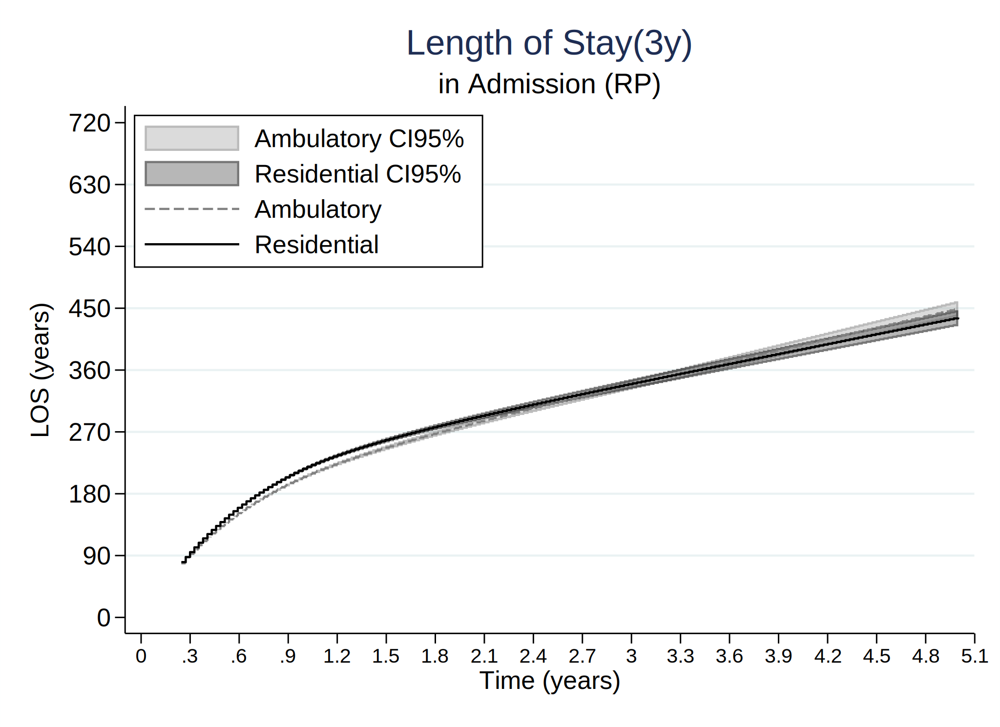
. tw (rarea flos_from2a_2_lci_3y_rp flos_from2a_2_uci_3y_rp timevar01, sort connect(stairstep stairstep) lcolor(gs8) color(gs8%35)) //
> /
> (rarea flos_from2b_2_lci_3y_rp flos_from2b_2_uci_3y_rp timevar01, sort connect(stairstep stairstep) lcolor(black) color(black%35)
> ) ///
> (line flos_from2a_2_3y_rp timevar01, sort connect(stairstep stairstep) lcolor(gs8) lpattern("-")) ///
> (line flos_from2b_2_3y_rp timevar01, sort connect(stairstep stairstep) lcolor(black)), ///
> xtitle(Time (years)) ytitle(LOS (years)) xlab(0(.3)5,labsize(small)) ylab(0(90)400, /// *730
> angle(h) format(%4.0f)) legend(order(1 "Ambulatory CI95%" 2 "Residential CI95%" 3 "Ambulatory" 4 "Residential") pos(11) ring(0) c(1)) //
> /
> title("Length of Stay(3y)") name(los_models_22_3y_rp_22, replace) ///
> subtitle("in Treatment Completion (RP)") /// * text(0.2 4 "Ambulatory", size(small)) /// * text(0.29 4 "Residential", size(small)) ///
> graphregion(col(white)) saving(los_models_22_3y_rp_22_corr3.gph, replace)
(file los_models_22_3y_rp_22_corr3.gph saved)
. graph save "los_models_22_3y_rp_22_corr3.gph", replace
(file los_models_22_3y_rp_22_corr3.gph saved)
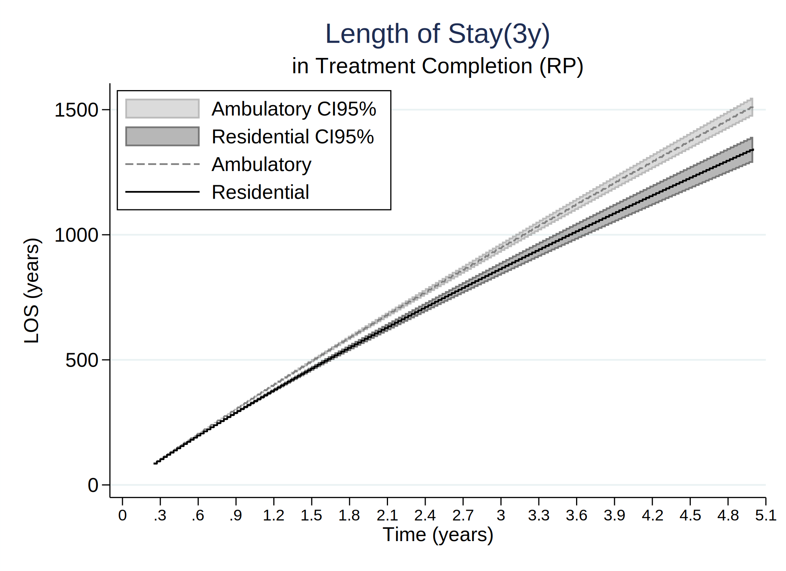
. tw (rarea flos_from3a_3_lci_3y_rp flos_from3a_3_uci_3y_rp timevar01, sort connect(stairstep stairstep) lcolor(gs8) color(gs8%35)) //
> /
> (rarea flos_from3b_3_lci_3y_rp flos_from3b_3_uci_3y_rp timevar01, sort connect(stairstep stairstep) lcolor(black) color(black%35)
> ) ///
> (line flos_from3a_3_3y_rp timevar01, sort connect(stairstep stairstep) lcolor(gs8) lpattern("-")) ///
> (line flos_from3b_3_3y_rp timevar01, sort connect(stairstep stairstep) lcolor(black)), ///
> xtitle(Time (years)) ytitle(LOS (years)) xlab(0(.3)5,labsize(small)) ylab(0(90)540, /// *730
> angle(h) format(%4.0f)) legend(order(1 "Ambulatory CI95%" 2 "Residential CI95%" 3 "Ambulatory" 4 "Residential") pos(11) ring(0) c(1)) //
> /
> title("Length of Stay(3y)") name(los_models_33_3y_rp_22, replace) ///
> subtitle("in Treatment Non-Completion (RP)") /// * text(0.2 4 "Ambulatory", size(small)) /// * text(0.29 4 "Residential", size(small))
> ///
> graphregion(col(white)) saving(los_models_33_3y_rp_22_corr3.gph, replace)
(file los_models_33_3y_rp_22_corr3.gph saved)
. graph save "los_models_33_3y_rp_22_corr3.gph", replace
(file los_models_33_3y_rp_22_corr3.gph saved)
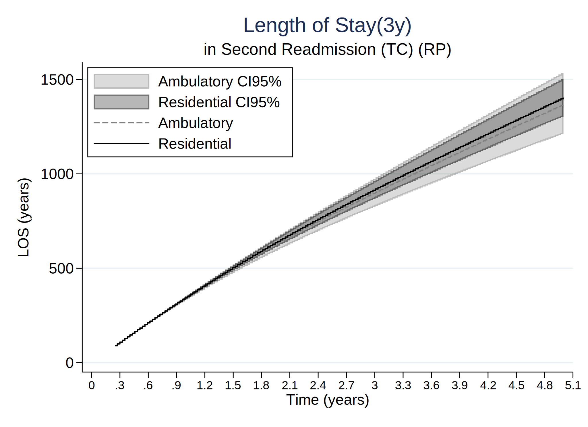
. tw (rarea flos_from4a_4_lci_3y_rp flos_from4a_4_uci_3y_rp timevar01, sort connect(stairstep stairstep) lcolor(gs8) color(gs8%35)) //
> /
> (rarea flos_from4b_4_lci_3y_rp flos_from4b_4_uci_3y_rp timevar01, sort connect(stairstep stairstep) lcolor(black) color(black%35)
> ) ///
> (line flos_from4a_4_3y_rp timevar01, sort connect(stairstep stairstep) lcolor(gs8) lpattern("-")) ///
> (line flos_from4b_4_3y_rp timevar01, sort connect(stairstep stairstep) lcolor(black)), ///
> xtitle(Time (years)) ytitle(LOS (years)) xlab(0(.3)5,labsize(small)) ylab(0(90)1080, /// *730
> angle(h) format(%4.0f)) legend(order(1 "Ambulatory CI95%" 2 "Residential CI95%" 3 "Ambulatory" 4 "Residential") pos(11) ring(0) c(1)) //
> /
> title("Length of Stay(3y)") name(los_models_44_3y_rp_22, replace) ///
> subtitle("in Readmission (TC) (RP)") /// * text(0.2 4 "Ambulatory", size(small)) /// * text(0.29 4 "Residential", size(small)) ///
> graphregion(col(white)) saving(los_models_44_3y_rp_22_corr3.gph, replace)
(file los_models_44_3y_rp_22_corr3.gph saved)
. graph save "los_models_44_3y_rp_22_corr3.gph", replace
(file los_models_44_3y_rp_22_corr3.gph saved)
. tw (rarea flos_from5a_5_lci_3y_rp flos_from5a_5_uci_3y_rp timevar01, sort connect(stairstep stairstep) lcolor(gs8) color(gs8%35)) //
> /
> (rarea flos_from5b_5_lci_3y_rp flos_from5b_5_uci_3y_rp timevar01, sort connect(stairstep stairstep) lcolor(black) color(black%35)
> ) ///
> (line flos_from5a_5_3y_rp timevar01, sort connect(stairstep stairstep) lcolor(gs8) lpattern("-")) ///
> (line flos_from5b_5_3y_rp timevar01, sort connect(stairstep stairstep) lcolor(black)), ///
> xtitle(Time (years)) ytitle(LOS (years)) xlab(0(.3)5,labsize(small)) ylab(0(90)400, /// *730
> angle(h) format(%4.0f)) legend(order(1 "Ambulatory CI95%" 2 "Residential CI95%" 3 "Ambulatory" 4 "Residential") pos(11) ring(0) c(1)) //
> /
> title("Length of Stay(3y)") name(los_models_22_3y_rp_22, replace) ///
> subtitle("in Readmission (TNC) (RP)") /// * text(0.2 4 "Ambulatory", size(small)) /// * text(0.29 4 "Residential", size(small)) ///
> graphregion(col(white)) saving(los_models_55_3y_rp_22_corr3.gph, replace)
(file los_models_55_3y_rp_22_corr3.gph saved)
. graph save "los_models_55_3y_rp_22_corr3.gph", replace
(file los_models_55_3y_rp_22_corr3.gph saved)
. tw (rarea flos_from6a_6_lci_3y_rp flos_from6a_6_uci_3y_rp timevar01, sort connect(stairstep stairstep) lcolor(gs8) color(gs8%35)) //
> /
> (rarea flos_from6b_6_lci_3y_rp flos_from6b_6_uci_3y_rp timevar01, sort connect(stairstep stairstep) lcolor(black) color(black%35)
> ) ///
> (line flos_from6a_6_3y_rp timevar01, sort connect(stairstep stairstep) lcolor(gs8) lpattern("-")) ///
> (line flos_from6b_6_3y_rp timevar01, sort connect(stairstep stairstep) lcolor(black)), ///
> xtitle(Time (years)) ytitle(LOS (years)) xlab(0(.3)5,labsize(small)) ylab(0(90)540, /// *730
> angle(h) format(%4.0f)) legend(order(1 "Ambulatory CI95%" 2 "Residential CI95%" 3 "Ambulatory" 4 "Residential") pos(11) ring(0) c(1)) //
> /
> title("Length of Stay(3y)") name(los_models_66_3y_rp_22, replace) ///
> subtitle("in Second Readmission (TC) (RP)") /// * text(0.2 4 "Ambulatory", size(small)) /// * text(0.29 4 "Residential", size(small)) /
> //
> graphregion(col(white)) saving(los_models_66_3y_rp_22_corr3.gph, replace)
(file los_models_66_3y_rp_22_corr3.gph saved)
. graph save "los_models_66_3y_rp_22_corr3.gph", replace
(file los_models_66_3y_rp_22_corr3.gph saved)
. tw (rarea flos_from7a_7_lci_3y_rp flos_from7a_7_uci_3y_rp timevar01, sort connect(stairstep stairstep) lcolor(gs8) color(gs8%35)) //
> /
> (rarea flos_from7b_7_lci_3y_rp flos_from7b_7_uci_3y_rp timevar01, sort connect(stairstep stairstep) lcolor(black) color(black%35)
> ) ///
> (line flos_from7a_7_3y_rp timevar01, sort connect(stairstep stairstep) lcolor(gs8) lpattern("-")) ///
> (line flos_from7b_7_3y_rp timevar01, sort connect(stairstep stairstep) lcolor(black)), ///
> xtitle(Time (years)) ytitle(LOS (years)) xlab(0(.3)5,labsize(small)) ylab(0(90)1080, /// *730
> angle(h) format(%4.0f)) legend(order(1 "Ambulatory CI95%" 2 "Residential CI95%" 3 "Ambulatory" 4 "Residential") pos(11) ring(0) c(1)) //
> /
> title("Length of Stay(3y)") name(los_models_77_3y_rp_22, replace) ///
> subtitle("in Second Readmission (TNC) (RP)") /// * text(0.2 4 "Ambulatory", size(small)) /// * text(0.29 4 "Residential", size(small))
> ///
> graphregion(col(white)) saving(los_models_77_3y_rp_22_corr3.gph, replace)
(file los_models_77_3y_rp_22_corr3.gph saved)
. graph save "los_models_77_3y_rp_22_corr3.gph", replace
(file los_models_77_3y_rp_22_corr3.gph saved)
=============================================================================
=============================================================================
.
. tw (rarea fdiff_prob_from1_2_lci_3y_rp fdiff_prob_from1_2_uci_3y_rp timevar01, sort connect(stairstep stairstep) lcolor(gs8) color(g
> s8%75)) ///
> (line fdiff_prob_from1_2_3y_rp timevar01, sort connect(stairstep stairstep) lcolor(black)) ///
> (rarea fdiff_prob_from1_3_lci_3y_rp fdiff_prob_from1_3_uci_3y_rp timevar01, sort connect(stairstep stairstep) lcolor(gs8) color(g
> s8%35)) ///
> (line fdiff_prob_from1_3_3y_rp timevar01, sort connect(stairstep stairstep) lcolor(gs8)), ///
> yline(0, lcolor(navy)) ///
> xtitle(Time (years)) ytitle(Difference in Probabilities) xlab(0(.3)5,labsize(small)) ylab(-.25(.05).25, /// *730
> angle(h) format(%4.2f)) legend(order(1 "CI95%" 2 "Difference (TC)" 3 "CI95%" 4 "Difference (TNC)") pos(11) ring(0) c(1)) ///
> title("Difference in Probabilities at 3 years") name(diff_mod1213_3y_rp_22, replace) ///
> subtitle("from Admission to Readmission (RP)") ///
> graphregion(col(white)) saving(diff_mod1213_3y_rp_22_corr3.gph, replace)
(file diff_mod1213_3y_rp_22_corr3.gph saved)
. graph save "diff_mod1213_3y_rp_22_corr3.gph", replace
(file diff_mod1213_3y_rp_22_corr3.gph saved)
. tw (rarea fdiff_prob_from2_4_lci_3y_rp fdiff_prob_from2_4_uci_3y_rp timevar01, sort connect(stairstep stairstep) lcolor(gs8) color(g
> s8%75)) ///
> (line fdiff_prob_from2_4_3y_rp timevar01, sort connect(stairstep stairstep) lcolor(black)) ///
> (rarea fdiff_prob_from3_5_lci_3y_rp fdiff_prob_from3_5_uci_3y_rp timevar01, sort connect(stairstep stairstep) lcolor(gs8) color(g
> s8%35)) ///
> (line fdiff_prob_from3_5_3y_rp timevar01, sort connect(stairstep stairstep) lcolor(gs8)), ///
> yline(0, lcolor(navy)) ///
> xtitle(Time (years)) ytitle(Difference in Probabilities) xlab(0(.3)5,labsize(small)) ylab(-.25(.05).25, /// *730
> angle(h) format(%4.2f)) legend(order(1 "CI95%" 2 "Difference (TC)" 3 "CI95%" 4 "Difference (TNC)") pos(4) ring(0) c(1)) ///
> title("Difference in Probabilities at 3 years") name(diff_mod2435_3y_rp_22, replace) ///
> subtitle("from First treatment to Readmission (RP)") ///
> graphregion(col(white)) saving(diff_mod2435_3y_rp_22_corr3.gph, replace)
(file diff_mod2435_3y_rp_22_corr3.gph saved)
. graph save "diff_mod2435_3y_rp_22_corr3.gph", replace
(file diff_mod2435_3y_rp_22_corr3.gph saved)
. tw (rarea fdiff_prob_from4_6_lci_3y_rp fdiff_prob_from4_6_uci_3y_rp timevar01, sort connect(stairstep stairstep) lcolor(gs8) color(g
> s8%75)) ///
> (line fdiff_prob_from4_6_3y_rp timevar01, sort connect(stairstep stairstep) lcolor(black)) ///
> (rarea fdiff_prob_from5_7_lci_3y_rp fdiff_prob_from5_7_uci_3y_rp timevar01, sort connect(stairstep stairstep) lcolor(gs8) color(g
> s8%35)) ///
> (line fdiff_prob_from5_7_3y_rp timevar01, sort connect(stairstep stairstep) lcolor(gs8)), ///
> yline(0, lcolor(navy)) ///
> xtitle(Time (years)) ytitle(Difference in Probabilities) xlab(0(.3)5,labsize(small)) ylab(-.25(.05).25, /// *730
> angle(h) format(%4.2f)) legend(order(1 "CI95%" 2 "Difference (TC)" 3 "CI95%" 4 "Difference (TNC)") pos(4) ring(0) c(1)) ///
> title("Difference in Probabilities at 3 years") name(diff_mod2435_3y_rp_22, replace) ///
> subtitle("from First to Second Readmission (RP)") ///
> graphregion(col(white)) saving(diff_mod4657_3y_rp_22_corr3.gph, replace)
(file diff_mod4657_3y_rp_22_corr3.gph saved)
. graph save "diff_mod4657_3y_rp_22_corr3.gph", replace
(file diff_mod4657_3y_rp_22_corr3.gph saved)
. tw (rarea fdiff_prob_from6_8_lci_3y_rp fdiff_prob_from6_8_uci_3y_rp timevar01, sort connect(stairstep stairstep) lcolor(gs8) color(g
> s8%75)) ///
> (line fdiff_prob_from6_8_3y_rp timevar01, sort connect(stairstep stairstep) lcolor(black)) ///
> (rarea fdiff_prob_from7_9_lci_3y_rp fdiff_prob_from7_9_uci_3y_rp timevar01, sort connect(stairstep stairstep) lcolor(gs8) color(g
> s8%35)) ///
> (line fdiff_prob_from7_9_3y_rp timevar01, sort connect(stairstep stairstep) lcolor(gs8)), ///
> yline(0, lcolor(navy)) ///
> xtitle(Time (years)) ytitle(Difference in Probabilities) xlab(0(.3)5,labsize(small)) ylab(-.25(.05).25, /// *730
> angle(h) format(%4.2f)) legend(order(1 "CI95%" 2 "Difference (TC)" 3 "CI95%" 4 "Difference (TNC)") pos(4) ring(0) c(1)) ///
> title("Difference in Probabilities at 3 years") name(diff_mod2435_3y_rp_22, replace) ///
> subtitle("from Second to Third Readmission (RP)") ///
> graphregion(col(white)) saving(diff_mod6879_3y_rp_22_corr3.gph, replace)
(file diff_mod6879_3y_rp_22_corr3.gph saved)
. graph save "diff_mod6879_3y_rp_22_corr3.gph", replace
(file diff_mod6879_3y_rp_22_corr3.gph saved)
=============================================================================
=============================================================================
.
. tw (rarea fdiff_los_from1_2_lci_3y_rp fdiff_los_from1_2_uci_3y_rp timevar01, sort connect(stairstep stairstep) lcolor(gs8) color(gs8
> %75)) ///
> (line fdiff_los_from1_2_3y_rp timevar01, sort connect(stairstep stairstep) lcolor(black)) ///
> (rarea fdiff_los_from1_3_lci_3y_rp fdiff_los_from1_3_uci_3y_rp timevar01, sort connect(stairstep stairstep) lcolor(gs8) color(gs8
> %35)) ///
> (line fdiff_los_from1_3_3y_rp timevar01, sort connect(stairstep stairstep) lcolor(gs8)), ///
> yline(0, lcolor(navy)) ///
> xtitle(Time (years)) ytitle(Difference in Lengths of Stay) xlab(0(.3)5,labsize(small)) ylab(-365(90)365, /// *730
> angle(h) format(%4.0f)) legend(order(1 "CI95%" 2 "Difference (TC)" 3 "CI95%" 4 "Difference (TNC)") pos(11) ring(0) c(1)) ///
> title("Difference in Probabilities at 3 years") name(diff_mod_los1213_3y_rp_22, replace) ///
> subtitle("from Admission to Readmission (RP)") ///
> graphregion(col(white)) saving(diff_mod_los1213_3y_rp_22_corr3.gph, replace)
(file diff_mod_los1213_3y_rp_22_corr3.gph saved)
. graph save "diff_mod_los1213_3y_rp_22_corr3.gph", replace
(file diff_mod_los1213_3y_rp_22_corr3.gph saved)
. tw (rarea fdiff_los_from2_4_lci_3y_rp fdiff_los_from2_4_uci_3y_rp timevar01, sort connect(stairstep stairstep) lcolor(gs8) color(gs8
> %75)) ///
> (line fdiff_los_from2_4_3y_rp timevar01, sort connect(stairstep stairstep) lcolor(black)) ///
> (rarea fdiff_los_from3_5_lci_3y_rp fdiff_los_from3_5_uci_3y_rp timevar01, sort connect(stairstep stairstep) lcolor(gs8) color(gs8
> %35)) ///
> (line fdiff_los_from3_5_3y_rp timevar01, sort connect(stairstep stairstep) lcolor(gs8)), ///
> yline(0, lcolor(navy)) ///
> xtitle(Time (years)) ytitle(Difference in Lengths of Stay) xlab(0(.3)5,labsize(small)) ylab(-365(90)365, /// *730
> angle(h) format(%4.0f)) legend(order(1 "CI95%" 2 "Difference (TC)" 3 "CI95%" 4 "Difference (TNC)") pos(4) ring(0) c(1)) ///
> title("Difference in Probabilities at 3 years") name(diff_mod_los2435_3y_rp_22, replace) ///
> subtitle("from First treatment to Readmission (RP)") ///
> graphregion(col(white)) saving(diff_mod_los2435_3y_rp_22_corr3.gph, replace)
(file diff_mod_los2435_3y_rp_22_corr3.gph saved)
. graph save "diff_mod_los2435_3y_rp_22_corr3.gph", replace
(file diff_mod_los2435_3y_rp_22_corr3.gph saved)
. tw (rarea fdiff_los_from4_6_lci_3y_rp fdiff_los_from4_6_uci_3y_rp timevar01, sort connect(stairstep stairstep) lcolor(gs8) color(gs8
> %75)) ///
> (line fdiff_los_from4_6_3y_rp timevar01, sort connect(stairstep stairstep) lcolor(black)) ///
> (rarea fdiff_los_from5_7_lci_3y_rp fdiff_los_from5_7_uci_3y_rp timevar01, sort connect(stairstep stairstep) lcolor(gs8) color(gs8
> %35)) ///
> (line fdiff_los_from5_7_3y_rp timevar01, sort connect(stairstep stairstep) lcolor(gs8)), ///
> yline(0, lcolor(navy)) ///
> xtitle(Time (years)) ytitle(Difference in Lengths of Stay) xlab(0(.3)5,labsize(small)) ylab(-365(90)365, /// *730
> angle(h) format(%4.0f)) legend(order(1 "CI95%" 2 "Difference (TC)" 3 "CI95%" 4 "Difference (TNC)") pos(4) ring(0) c(1)) ///
> title("Difference in Probabilities at 3 years") name(diff_mod_los2435_3y_rp_22, replace) ///
> subtitle("from First to Second Readmission (RP)") ///
> graphregion(col(white)) saving(diff_mod_los4657_3y_rp_22_corr3.gph, replace)
(file diff_mod_los4657_3y_rp_22_corr3.gph saved)
. graph save "diff_mod_los4657_3y_rp_22_corr3.gph", replace
(file diff_mod_los4657_3y_rp_22_corr3.gph saved)
. tw (rarea fdiff_los_from6_8_lci_3y_rp fdiff_los_from6_8_uci_3y_rp timevar01, sort connect(stairstep stairstep) lcolor(gs8) color(gs8
> %75)) ///
> (line fdiff_los_from6_8_3y_rp timevar01, sort connect(stairstep stairstep) lcolor(black)) ///
> (rarea fdiff_los_from7_9_lci_3y_rp fdiff_los_from7_9_uci_3y_rp timevar01, sort connect(stairstep stairstep) lcolor(gs8) color(gs8
> %35)) ///
> (line fdiff_los_from7_9_3y_rp timevar01, sort connect(stairstep stairstep) lcolor(gs8)), ///
> yline(0, lcolor(navy)) ///
> xtitle(Time (years)) ytitle(Difference in Lengths of Stay) xlab(0(.3)5,labsize(small)) ylab(-365(90)365, /// *730
> angle(h) format(%4.0f)) legend(order(1 "CI95%" 2 "Difference (TC)" 3 "CI95%" 4 "Difference (TNC)") pos(4) ring(0) c(1)) ///
> title("Difference in Probabilities at 3 years") name(diff_mod_los2435_3y_rp_22, replace) ///
> subtitle("from Second to Third Readmission (RP)") ///
> graphregion(col(white)) saving(diff_mod_los6879_3y_rp_22_corr3.gph, replace)
(file diff_mod_los6879_3y_rp_22_corr3.gph saved)
. graph save "diff_mod_los6879_3y_rp_22_corr3.gph", replace
(file diff_mod_los6879_3y_rp_22_corr3.gph saved)
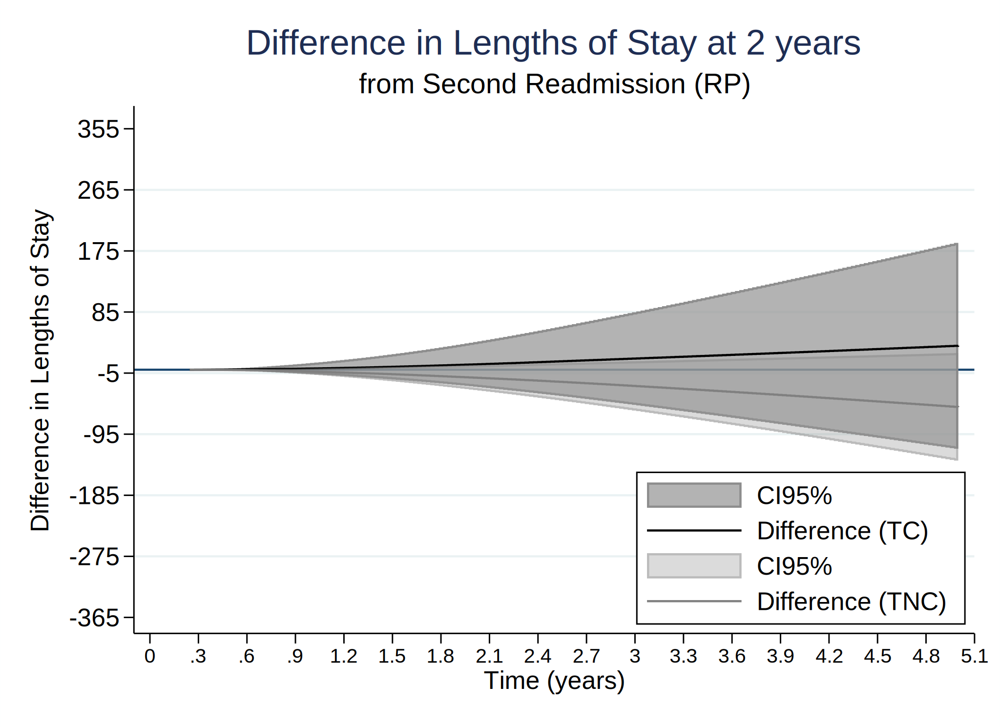
Saved at= 17:03:38 13 Oct 2022